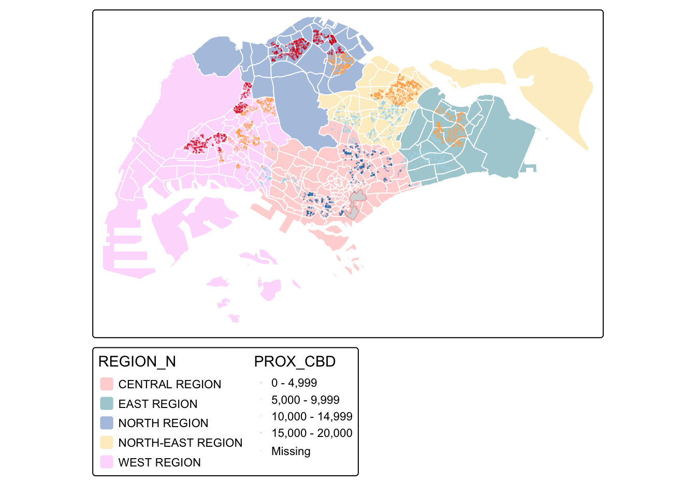
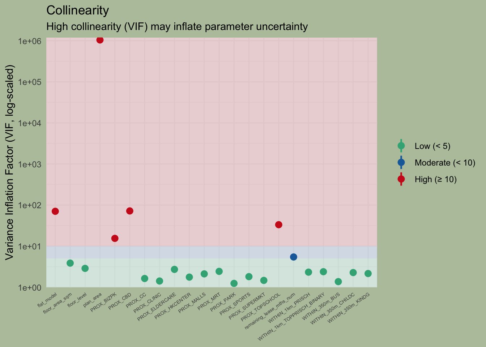
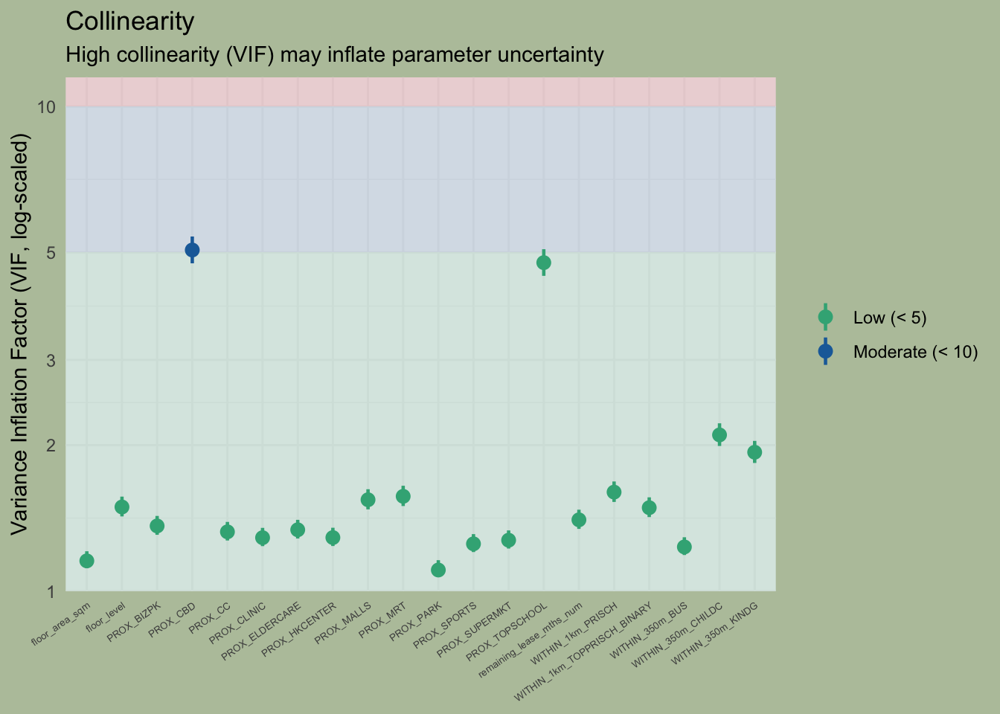
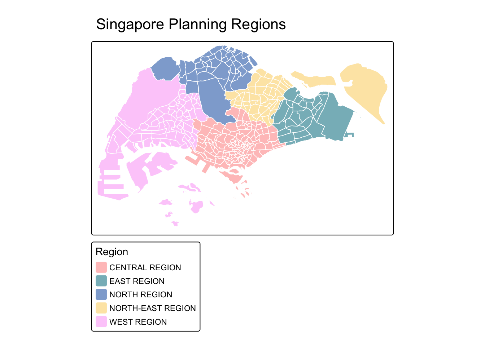

pacman::p_load(httr, tidyverse, sf, tmap, jsonlite, progress,
spdep, GWmodel, SpatialML, rsample, Metrics, knitr,
kableExtra, spatialRF, randomForestExplainer, rvest,
stringr, lubridate, corrplot, performance, see,
gtsummary, ModelMetrics)03 - Predictive Modeling for Singapore HDB Resale Prices
1 Overview
1.1 Background
1.2 Objective
The objective of this take-home exercise is to develop a spatially informed model to predict HDB resale prices in Singapore, making use of appropriate geospatial analytics methods. We will calibrate a predictive model to predict HDB resale prices for the period July to September 2025, using HDB resale transaction data from July 2024 to June 2025.
1.3 The Task
In this study, we will first determine potential factors that influence the HDB resale price, import the data of these factors, and process them for predictive modeling. The modeling we will investigate in this task include Multi-linear Regression (MLR), Geographically Weighted Regression (GWR), non-spatial Random Forest, as well as Geographical Weighted Random Forest Model (gwRF). Among these models, we will examine and compare them to derive the best performing model.
2 Installing and Loading R packages
One new package called jsonlite will be installed and loaded onto R environment. It will be used to parse json file into R as data frame.
3 The Data
We will make use of the following factors …
Structural factors
- Area of the unit
- Floor level
- Remaining lease
- Age of the unit
- Main Upgrading Program (MUP) completed (optional)
- Average population age in the area??
Location factors
- Proxomity to CBD
- Proxomity to business park
- Proximity to eldercare
- Proximity to foodcourt/hawker centres
- Proximity to MRT
- Proximity to park
- Proximity to top primary school
- Proximity to shopping mall
- Proximity to supermarket
- Proximity to healthcare facilities
- Proximity to sports halls
- Proximity to community clubs
- Numbers of kindergartens within 350m
- Numbers of childcare centres within 350m
- Numbers of bus stop within 350m
- Numbers of primary school within 1km
| Data set | Link | Source |
|---|---|---|
| CBD | ||
| Business Parks | JTC Business Park Land | |
| eldercare | Eldercare Services | |
| foodcourt/hawker centres | Hawker Centres (GEOJSON) | data.gov.sg |
| MRT | TrainStation_Aug2025 | DataMall |
| Major interchange stations | Derive from MRT based on LTAguru | |
| Upcoming bus interchange | Derive from MRT based on LTAguru | |
| park | Park Facilities | |
| shopping mall | wiki + Kaggle | wiki + Kaggle |
| supermarket | Supermarkets (GEOJSON) | data.gov.sg |
| kindergartens within 350m | Kindergartens | |
| childcare centres within 350m | ||
| bus stop within 350m | DataMall | |
| primary school within 1km | School Directory and Information | |
| good primary school within 1km | Primary school with data from sophia education | |
| healthcare facilities | CHAS Clinics | |
| Sports hall | SportsFields@SG | data.gov.sg |
2.1 Import Data
2.1.0 Singapore Maps
Below we will import Master Plan 2019 Subzone Boundary (No Sea).
Code
mpsz <- st_read("data/rawdata/MasterPlan2019SubzoneBoundaryNoSeaKML.kml") %>%
st_zm(drop = TRUE, what = "ZM") %>%
st_transform(crs = 3414)
# extract values from the HTML description
extract_kml_field <- function(html_text, field_name) {
if (is.na(html_text) || html_text == "") return(NA_character_)
page <- read_html(html_text)
rows <- page %>% html_elements("tr")
value <- rows %>%
keep(~ html_text2(html_element(.x, "th")) == field_name) %>%
html_element("td") %>%
html_text2()
if (length(value) == 0) NA_character_ else value
}
# extract info
mpsz <- mpsz %>%
mutate(
REGION_N = map_chr(Description, extract_kml_field, "REGION_N"),
PLN_AREA_N = map_chr(Description, extract_kml_field, "PLN_AREA_N"),
SUBZONE_N = map_chr(Description, extract_kml_field, "SUBZONE_N"),
SUBZONE_C = map_chr(Description, extract_kml_field, "SUBZONE_C")
) %>%
select(-Name, -Description) %>%
relocate(geometry, .after = last_col())
write_rds(mpsz, "data/rds/mpsz.rds")Coordinate Reference System:
User input: EPSG:3414
wkt:
PROJCRS["SVY21 / Singapore TM",
BASEGEOGCRS["SVY21",
DATUM["SVY21",
ELLIPSOID["WGS 84",6378137,298.257223563,
LENGTHUNIT["metre",1]]],
PRIMEM["Greenwich",0,
ANGLEUNIT["degree",0.0174532925199433]],
ID["EPSG",4757]],
CONVERSION["Singapore Transverse Mercator",
METHOD["Transverse Mercator",
ID["EPSG",9807]],
PARAMETER["Latitude of natural origin",1.36666666666667,
ANGLEUNIT["degree",0.0174532925199433],
ID["EPSG",8801]],
PARAMETER["Longitude of natural origin",103.833333333333,
ANGLEUNIT["degree",0.0174532925199433],
ID["EPSG",8802]],
PARAMETER["Scale factor at natural origin",1,
SCALEUNIT["unity",1],
ID["EPSG",8805]],
PARAMETER["False easting",28001.642,
LENGTHUNIT["metre",1],
ID["EPSG",8806]],
PARAMETER["False northing",38744.572,
LENGTHUNIT["metre",1],
ID["EPSG",8807]]],
CS[Cartesian,2],
AXIS["northing (N)",north,
ORDER[1],
LENGTHUNIT["metre",1]],
AXIS["easting (E)",east,
ORDER[2],
LENGTHUNIT["metre",1]],
USAGE[
SCOPE["Cadastre, engineering survey, topographic mapping."],
AREA["Singapore - onshore and offshore."],
BBOX[1.13,103.59,1.47,104.07]],
ID["EPSG",3414]]2.1.1 HDB resale data Preparation
- Load HDB Resale Data This data set comprises of HDB resale transactions from July 2017 onwards. Below we will extract a sub-set of transaction records on 4-Room flat transacted during July 2024 to June 2025.
Code
HDBresale <- read_csv(
"data/rawdata/ResaleflatpricesJan2017.csv") %>%
filter(flat_type == "4 ROOM") %>%
filter(month >= "2024-07" & month < "2025-06") # filter the sample data for the exercise.
write_rds(HDBresale, "data/rds/HDBresale.rds")- Further processing for street names We do further processing for the data as the street names with Saint are usually written as St.
Code
# street names is ST, but it's actually Sait.
HDBresale$street_name <- gsub(
"ST\\.", "SAINT",
HDBresale$street_name
)Rows: 10,745
Columns: 11
$ month <chr> "2024-07", "2024-07", "2024-07", "2024-07", "2024-…
$ town <chr> "ANG MO KIO", "ANG MO KIO", "ANG MO KIO", "ANG MO …
$ flat_type <chr> "4 ROOM", "4 ROOM", "4 ROOM", "4 ROOM", "4 ROOM", …
$ block <chr> "335", "333", "226", "336", "303", "226", "337", "…
$ street_name <chr> "ANG MO KIO AVE 1", "ANG MO KIO AVE 1", "ANG MO KI…
$ storey_range <chr> "01 TO 03", "01 TO 03", "07 TO 09", "01 TO 03", "1…
$ floor_area_sqm <dbl> 91, 93, 91, 91, 97, 92, 91, 97, 94, 88, 102, 91, 8…
$ flat_model <chr> "New Generation", "New Generation", "New Generatio…
$ lease_commence_date <dbl> 1982, 1981, 1978, 1982, 1977, 1978, 1982, 1977, 20…
$ remaining_lease <chr> "56 years 08 months", "55 years 08 months", "52 ye…
$ resale_price <dbl> 528888, 500000, 540000, 500000, 620000, 570000, 50…- Geocoding HDB Resale Data We use OneMap Geocode API: - https://www.onemap.gov.sg/apidocs/. - ttps://www.onemap.gov.sg/apidocs/reverseGeocode
Below we will prepare a geocoding function. It aims to perform the following tasks:
- Combining the block and street name into an address. The addresses will be used to geocode instead of postal code
- Passing the address as the searchVal in our query
- Sending the query to OneMapSG search. Note: Since we don’t need all the address details, we can set getAddrDetails as ‘N’
- Converting response (JSON object) to text
- Saving response in text form as a dataframe
- Retain the latitude and longitude for our output.
# for multiple queries
geocode <- function(block, streetname) {
base_url <- "https://onemap.gov.sg/api/common/elastic/search"
address <- paste(block, streetname, sep = " ")
query <- list("searchVal" = address,
"returnGeom" = "Y",
"getAddrDetails" = "N", #No. can change to Y for comparison
"pageNum" = "1")
res <- GET(base_url, query = query) #get URL query
restext <- content(res, as = "text")
output <- fromJSON(restext) %>%
as.data.frame %>%
select(results.LATITUDE, results.LONGITUDE)
return(output)
}- Run functions
HDBresale$LATITUDE <- 0
HDBresale$LONGITUDE <- 0
for(i in 1:nrow(HDBresale)){
temp_output <- geocode(HDBresale[i, 4], HDBresale[i, 5])
HDBresale$LATITUDE[i] <- temp_output$results.LATITUDE
HDBresale$LONGITUDE[i] <- temp_output$results.LONGITUDE
}- Transform to sf data frame We want to ensure that:
- both input data sets must be in sf objects
- they must be in similar projected coordinates systems
Code
st_crs(HDBresale)
HDBresale_sf <- HDBresale %>%
st_as_sf(
coords = c("LONGITUDE", "LATITUDE"),
crs = 4326) %>% #if decimal degree
st_transform(crs = 3414)
write_rds(HDBresale_sf, "data/rds/HDBresale_sf.rds")2.1.2 Load location factors data
- Childcare centers
Code
preschool_data <- st_read("data/rawdata/PreschoolsLocation.kml") %>%
st_transform(crs = 3414)
write_rds(preschool_data, "data/rds/preschool_data.rds")Make sure the childcare coordinate system is SVY21.
Code
st_crs(preschool_data)Coordinate Reference System:
User input: EPSG:3414
wkt:
PROJCRS["SVY21 / Singapore TM",
BASEGEOGCRS["SVY21",
DATUM["SVY21",
ELLIPSOID["WGS 84",6378137,298.257223563,
LENGTHUNIT["metre",1]]],
PRIMEM["Greenwich",0,
ANGLEUNIT["degree",0.0174532925199433]],
ID["EPSG",4757]],
CONVERSION["Singapore Transverse Mercator",
METHOD["Transverse Mercator",
ID["EPSG",9807]],
PARAMETER["Latitude of natural origin",1.36666666666667,
ANGLEUNIT["degree",0.0174532925199433],
ID["EPSG",8801]],
PARAMETER["Longitude of natural origin",103.833333333333,
ANGLEUNIT["degree",0.0174532925199433],
ID["EPSG",8802]],
PARAMETER["Scale factor at natural origin",1,
SCALEUNIT["unity",1],
ID["EPSG",8805]],
PARAMETER["False easting",28001.642,
LENGTHUNIT["metre",1],
ID["EPSG",8806]],
PARAMETER["False northing",38744.572,
LENGTHUNIT["metre",1],
ID["EPSG",8807]]],
CS[Cartesian,2],
AXIS["northing (N)",north,
ORDER[1],
LENGTHUNIT["metre",1]],
AXIS["easting (E)",east,
ORDER[2],
LENGTHUNIT["metre",1]],
USAGE[
SCOPE["Cadastre, engineering survey, topographic mapping."],
AREA["Singapore - onshore and offshore."],
BBOX[1.13,103.59,1.47,104.07]],
ID["EPSG",3414]]- Kindergartens
Code
kindergarten_data <- st_read("data/rawdata/Kindergartens.geojson") %>%
st_transform(crs = 3414)
write_rds(kindergarten_data, "data/rds/kindergarten_data.rds")- Primary schools data
Code
primschool_data <- read_csv("data/rawdata/General Information of schools.csv") %>%
select(school_name, postal_code, address)Below we need to geocode the primary school location because currently we have their postal codes.
Code
geocode_postal <- function(postal_code) {
url <- paste0("https://www.onemap.gov.sg/api/common/elastic/search?",
"searchVal=", postal_code,
"&returnGeom=Y&getAddrDetails=Y")
response <- GET(url)
if (status_code(response) == 200) {
result <- content(response, "text") %>% fromJSON()
if (result$found > 0) {
return(data.frame(
latitude = as.numeric(result$results$LATITUDE[1]),
longitude = as.numeric(result$results$LONGITUDE[1])
))
}
}
return(data.frame(latitude = NA, longitude = NA))
}
# Geocode all primary schools
primschool_coords <- lapply(primschool_data$postal_code, function(pc) {
Sys.sleep(0.2)
geocode_postal(pc)
})
primschool_coords_df <- bind_rows(primschool_coords)
primschool_data <- primschool_data %>%
bind_cols(primschool_coords_df)
# Convert to sf object
primschool_data <- primschool_data %>%
filter(!is.na(latitude)) %>% # Remove any that failed
st_as_sf(coords = c("longitude", "latitude"), crs = 4326) %>%
st_transform(3414) # Transform to SVY21
nrow(primschool_data) # How many successfully geocodedCheck what schools we will filter out using keywords:
Code
primschool_data %>%
filter(
grepl("SECONDARY|HIGH|INSTITUTE|INSTITUTION|SCHOOL OF|JUNIOR|COLLEGE",
school_name,
ignore.case = TRUE)) %>%
select(school_name) %>%
print(n = 50)Code
# Remove non-primary schools
primschool_data <- primschool_data %>%
filter(school_name %in% c("MARIS STELLA HIGH SCHOOL", "CATHOLIC HIGH SCHOOL") |
!grepl("SECONDARY|HIGH|INSTITUTE|INSTITUTION|SCHOOL OF|JUNIOR|COLLEGE",
school_name,
ignore.case = TRUE)) %>%
filter(!school_name %in% c("CHIJ KATONG CONVENT", "CHIJ ST. JOSEPH'S CONVENT"))
nrow(primschool_data)
write_rds(primschool_data, "data/rds/primschool_data.rds") - Top Primary schools
Code
top_primschool_data <- primschool_data %>%
filter(school_name %in% c("RAFFLES GIRLS' PRIMARY SCHOOL", "NANYANG PRIMARY SCHOOL",
"HENRY PARK PRIMARY SCHOOL", "ROSYTH SCHOOL",
"AI TONG SCHOOL", "NAN HUA PRIMARY SCHOOL", "ST. HILDA'S PRIMARY SCHOOL",
"TAO NAN SCHOOL", "CHIJ ST. NICHOLAS GIRLS' SCHOOL",
"CATHOLIC HIGH SCHOOL", "PEI HWA PRESBYTERIAN PRIMARY SCHOOL",
"METHODIST GIRLS' SCHOOL (PRIMARY)", "KONG HWA SCHOOL",
"RED SWASTIKA SCHOOL", "SINGAPORE CHINESE GIRLS' SCHOOL", "MARIS STELLA HIGH SCHOOL",
"ANGLO-CHINESE SCHOOL (PRIMARY)", "TEMASEK PRIMARY SCHOOL","RIVER VALLEY PRIMARY SCHOOL",
"CEDAR PRIMARY SCHOOL"))
write_rds(top_primschool_data, "data/rds/top_primschool_data.rds")- CBD
For CBD, we will extract the area for CBD from mpsz.
Code
cbd_data <- mpsz %>%
filter(SUBZONE_N %in% c("RAFFLES PLACE", "MARINA CENTRE", "TANJONG PAGAR", "CITY HALL", "CENTRAL SUBZONE")) %>%
st_union()
write_rds(cbd_data, "data/rds/cbd_data.rds")glimpse(cbd_data)sfc_POLYGON of length 1; first list element: List of 1
$ : num [1:742, 1:2] 30511 30488 30487 30490 30491 ...
- attr(*, "class")= chr [1:3] "XY" "POLYGON" "sfg"cbd_data is now a single merged polygon representing the entire CBD area. We will use this to calculate distance in later section.
- Business park
Business parks are typically smaller than planning areas, and we have multiple business parks to consider. Therefore, we will calculate centroid for measuring proximity, and transform polygon data to centroid point data.
Code
bizpark_data <- st_read("data/rawdata/JTCBusinessParkLandGEOJSON.geojson") %>%
st_zm(drop = TRUE, what = "ZM") %>%
st_transform(crs = 3414) %>%
st_centroid()
write_rds(bizpark_data, "data/rds/bizpark_data.rds")- Shopping malls
Code
sgmalls_rawdata <- read_csv("data/rawdata/singapore_malls.csv") %>%
filter(!Mall_Name %in% c('JCube', 'JCube (closed)', 'Liang Court', 'Lot 1',
'Nex', 'Novena Square Shopping Mall'))
sgmalls_coordinates <- read_csv("data/rawdata/shopping_mall_coordinates.csv") %>%
rename(Mall_Name = 'Mall Name')
merged_malls <- full_join(sgmalls_rawdata, sgmalls_coordinates, by = "Mall_Name")After the merge, we examine if any shopping malls turn out without coordinates data.
Code
malls_without_coords <- merged_malls %>%
filter(is.na(LONGITUDE) | is.na(LATITUDE)) %>%
pull(Mall_Name)
malls_without_coordsAmber Mansions - demolished in 1984 Bedok Point Capitol Centre Ellenborough Market Funan DigitaLife Mall - duplicate Great World - duplicate GV Yishun - cinema Jurong Entertainment Centre - demolished 2010 Shaw Tower - demolished Specialists’ Shopping Centre - redeveloped as Orchard Gateway Tanglin Shopping Centre - CLOSED The Golden Mile - CLOSED The Verge - closed Woodland Mall - change to Woods square mall
For this case, we manually check with Google maps
Code
coords_to_fill <- tibble(
Mall_Name = c("Alexandra Retail Centre", "Capitol Singapore", "Change Alley",
"Chinatown Point", "Clementi Mall", "Dawson Place",
"Esplanade Mall", "Forum The Shopping Mall", "Fu Lu Shou Complex",
"HarbourFront Centre", "Holland Road Shopping Centre",
"Holland Village Shopping Mall",
"Mandarin Gallery", "Mustafa Centre", "Novena Square",
"Orchard Towers", "Paya Lebar Quarter", "Peninsula Plaza",
"Punggol Coast Mall", "Scotts Shopping Centre", "Seletar Mall",
"Shaw House and Centre", "Singpost Center",
"South Beach", "Suntec City Mall",
"Tang Plaza", "The Cathay",
"The Majestic", "The Rail Mall",
"VivoCity", "Woodland Mall"),
LONGITUDE = c(103.8015, 103.8511, 103.8518,
103.8446, 103.7642, 103.8107,
103.8561, 103.8284, 103.8543,
103.8201, 103.7952,
103.7937,
103.8363, 103.8554, 103.8439,
103.8292, 103.8930, 103.8508,
103.9104, 103.8329, 103.8758,
103.8318, 103.8940,
103.8557, 103.8581,
103.8329, 103.8477,
103.8432, 103.7678,
103.8231, 103.7859
),
LATITUDE = c(1.2741176, 1.293231, 1.284643,
1.285434, 1.315111, 1.293505,
1.290017, 1.306391, 1.301906,
1.265355, 1.310419, 1.319192,
1.311708,
1.317859, 1.292544, 1.302237,
1.310192, 1.320230, 1.307743,
1.415818, 1.306093, 1.392464,
1.306507,
1.294485, 1.295778,
1.305221, 1.300409,
1.284871, 1.358212,
1.265357, 1.438082
)
)
merged_malls <- merged_malls %>%
rows_update(coords_to_fill, by = "Mall_Name", unmatched = "ignore")
merged_malls <- merged_malls %>%
mutate(
Mall_Name = case_when(
Mall_Name == "Woods Square Mall" ~ "Woodland Mall",
TRUE ~ Mall_Name
)
)
# add new mall data
new_malls <- tibble(
Mall_Name = "Woodleigh Mall",
LONGITUDE = 103.8718,
LATITUDE = 1.339560
)
merged_malls <- merged_malls %>%
bind_rows(new_malls)Check the malls with missing coordinates, meaning that we did not find the coordinates for these mall as they’re closed.
Code
malls_with_na <- merged_malls %>%
filter(is.na(LONGITUDE) | is.na(LATITUDE))
malls_with_naThese malls are the ones duplicate or closed. We will go ahead to remove them. We will also remove 2 duplicate malls observed from merged_malls.
Code
merged_malls <- merged_malls %>%
filter(!is.na(LONGITUDE) & !is.na(LATITUDE)) %>%
distinct(Mall_Name, .keep_all = TRUE) %>%
filter(!Mall_Name %in% c("Suntec City Mall", "Capitol Piazza"))
# Check how many remain
nrow(merged_malls)
# merged_malls has long, lat coordinates. We want to convert it to sf object, then SVY21.
merged_malls <- merged_malls %>%
st_as_sf(coords = c("LONGITUDE", "LATITUDE"), crs = 4326) %>% # it's WGS84
st_transform(3414)
write_rds(merged_malls, "data/rds/malls_data.rds")- Sports halls
Code
sports_data <- st_read("data/rawdata/SportsFieldsSG.geojson") %>%
st_zm(drop = TRUE, what = "ZM") %>%
st_transform(crs = 3414)
extract_kml_field <- function(html_text, field_name) {
if (is.na(html_text) || html_text == "") return(NA_character_)
page <- read_html(html_text)
rows <- page %>% html_elements("tr")
value <- rows %>%
keep(~ html_text2(html_element(.x, "th")) == field_name) %>%
html_element("td") %>%
html_text2()
if (length(value) == 0) NA_character_ else value
}
# extract info
sports_data <- sports_data %>%
mutate(
name = map_chr(Description, extract_kml_field, "NAME"),
description = map_chr(Description, extract_kml_field, "DESCRIPTION")
) %>%
select(-Name, -Description) %>%
relocate(geometry, .after = last_col())
write_rds(sports_data, "data/rds/sports_data.rds")- Parks
Code
park_data <- st_read("data/rawdata/MasterPlan2019SDCPParkandOpenSpacelayer.kml") %>%
st_zm(drop = TRUE, what = "ZM") %>%
st_make_valid() %>%
st_transform(crs = 3414)
# Calculate centroids
park_data <- park_data %>%
mutate(centroid = st_centroid(geometry))
write_rds(park_data, "data/rds/park_data.rds")- Supermarkets
Code
supermarkets_data <- st_read("data/rawdata/SupermarketsGEOJSON.geojson") %>%
st_zm(drop = TRUE, what = "ZM") %>%
st_transform(crs = 3414)
# # calculate centroids
# mutate(centroid = st_centroid(geometry)) %>%
# select(OBJECTID_1, centroid)
extract_kml_field <- function(html_text, field_name) {
if (is.na(html_text) || html_text == "") return(NA_character_)
page <- read_html(html_text)
rows <- page %>% html_elements("tr")
value <- rows %>%
keep(~ html_text2(html_element(.x, "th")) == field_name) %>%
html_element("td") %>%
html_text2()
if (length(value) == 0) NA_character_ else value
}
# extract info
supermarkets_data <- supermarkets_data %>%
mutate(
name = map_chr(Description, extract_kml_field, "LIC_NAME"),
postcode = map_chr(Description, extract_kml_field, "POSTCODE")
) %>%
select(-Name, -Description) %>%
relocate(geometry, .after = last_col())
write_rds(supermarkets_data, "data/rds/supermarkets_data.rds") - Community clubs
Code
cc_data <- st_read("data/rawdata/CommunityClubs.geojson") %>%
st_zm(drop = TRUE, what = "ZM") %>%
st_transform(crs = 3414)
extract_kml_field <- function(html_text, field_name) {
if (is.na(html_text) || html_text == "") return(NA_character_)
page <- read_html(html_text)
rows <- page %>% html_elements("tr")
value <- rows %>%
keep(~ html_text2(html_element(.x, "th")) == field_name) %>%
html_element("td") %>%
html_text2()
if (length(value) == 0) NA_character_ else value
}
cc_data <- cc_data %>%
mutate(
name = map_chr(Description, extract_kml_field, "NAME")
) %>%
select(-Name, -Description) %>%
relocate(geometry, .after = last_col())
write_rds(cc_data, "data/rds/cc_data.rds")- Foodcourt/Hawker centers
Code
hkcenter_data <- st_read("data/rawdata/HawkerCentresGEOJSON.geojson") %>%
st_zm(drop = TRUE, what = "ZM") %>%
st_transform(crs = 3414)
write_rds(hkcenter_data, "data/rds/hkcenter_data.rds")Data is also transformed to SVY21.
- MRT
Below we will import MRT station exit shapefile. The MRT stations may have multiple exits, and these exits matter when people go through them to enter or exit the stations. We will use the data to compute for proximity to HDB units.
Code
mrt_data <- st_read("data/rawdata/TrainStationExit_Feb2025/Train_Station_Exit_Layer.shp") %>%
st_transform(crs = 3414)Reading layer `Train_Station_Exit_Layer' from data source
`/Users/cathyc/Documents/cathyschu/ISSS626GEO/Take-home_Ex/Take-home_Ex03/data/rawdata/TrainStationExit_Feb2025/Train_Station_Exit_Layer.shp'
using driver `ESRI Shapefile'
Simple feature collection with 595 features and 2 fields
Geometry type: POINT
Dimension: XY
Bounding box: xmin: 6134.086 ymin: 27499.7 xmax: 45356.36 ymax: 47865.92
Projected CRS: SVY21- Bus stops
Below we will import Bus Stop Location shapfile from LTA DataMall.
Code
bus_data = st_read(dsn = "data/rawdata/BusStopLocation_Aug2025",
layer = "BusStop")
bus_data <- bus_data %>%
st_transform(crs = 3414)
write_rds(bus_data, "data/rds/bus_data.rds")- Clinics
Code
clinics_data <- st_read("data/rawdata/CHASClinics.geojson") %>%
st_zm(drop = TRUE, what = "ZM") %>%
st_transform(crs = 3414)
extract_kml_field <- function(html_text, field_name) {
if (is.na(html_text) || html_text == "") return(NA_character_)
page <- read_html(html_text)
rows <- page %>% html_elements("tr")
value <- rows %>%
keep(~ html_text2(html_element(.x, "th")) == field_name) %>%
html_element("td") %>%
html_text2()
if (length(value) == 0) NA_character_ else value
}
# extract info
clinics_data <- clinics_data %>%
mutate(
name = map_chr(Description, extract_kml_field, "HCI_NAME")
) %>%
select(-Name, -Description) %>%
relocate(geometry, .after = last_col())
write_rds(clinics_data, "data/rds/clinics_data.rds")Above data is verified to conform SVY21.
- Eldercare
Code
eldercare_data <- st_read("data/rawdata/EldercareServices.geojson") %>%
st_zm(drop = TRUE, what = "ZM") %>%
st_transform(crs = 3414)
extract_kml_field <- function(html_text, field_name) {
if (is.na(html_text) || html_text == "") return(NA_character_)
page <- read_html(html_text)
rows <- page %>% html_elements("tr")
value <- rows %>%
keep(~ html_text2(html_element(.x, "th")) == field_name) %>%
html_element("td") %>%
html_text2()
if (length(value) == 0) NA_character_ else value
}
# extract info
eldercare_data <- eldercare_data %>%
mutate(
name = map_chr(Description, extract_kml_field, "NAME")
) %>%
select(-Name, -Description) %>%
relocate(geometry, .after = last_col())
write_rds(eldercare_data, "data/rds/eldercare_data.rds")Above data is verified to conform SVY21.
2.1.3 Initial data inspection
We validate the coordinates of the location factor data below. It shows us that all now conform to SVY21, and ready for proximity computation.
cat('bizpark_data: ')bizpark_data: st_crs(bizpark_data)$epsg[1] 3414cat('bd_data: ')bd_data: st_crs(cbd_data)$epsg[1] 3414cat('clinics_data: ')clinics_data: st_crs(clinics_data)$epsg[1] 3414cat('eldercare_data: ')eldercare_data: st_crs(eldercare_data)$epsg[1] 3414cat('hkcenter_data: ')hkcenter_data: st_crs(hkcenter_data)$epsg[1] 3414cat('malls_data: ')malls_data: st_crs(malls_data)$epsg[1] 3414cat('mrt_data: ')mrt_data: st_crs(mrt_data)$epsg[1] 3414cat('park_data: ')park_data: st_crs(park_data)$epsg[1] 3414cat('preschool_data: ')preschool_data: st_crs(preschool_data)$epsg[1] 3414cat('primschool_data: ')primschool_data: st_crs(primschool_data)$epsg[1] 3414cat('supermarkets_data: ')supermarkets_data: st_crs(supermarkets_data)$epsg[1] 3414cat('sports_data: ')sports_data: st_crs(sports_data)$epsg[1] 3414cat('bus_data: ')bus_data: st_crs(bus_data)$epsg[1] 3414cat('kindergarten_data: ')kindergarten_data: st_crs(kindergarten_data)$epsg[1] 3414cat('cc_data: ')cc_data: st_crs(cc_data)$epsg[1] 34142.2 Structural factors
The tructural factors for this study include flat type, floor level, town, planning area, area of unit, age of unit, main upgrading program, and flat model. Currently in our data, we have the factors shown below:
names(HDBresale_sf) [1] "month" "town" "flat_type"
[4] "block" "street_name" "storey_range"
[7] "floor_area_sqm" "flat_model" "lease_commence_date"
[10] "remaining_lease" "resale_price" "geometry" We will rename some of the factors and keep the factors being used for the study:
Code
HDBresale_data <- HDBresale_sf %>%
select(flat_type, month, storey_range, town, floor_area_sqm, flat_model,
remaining_lease, resale_price, geometry) %>%
rename(transact_date = month,
remaining_lease_mths = remaining_lease,
floor_level = storey_range,
plan_area = town)
write_rds(HDBresale_data, "data/rds/HDBresale_data.rds") Rows: 10,745
Columns: 9
$ flat_type <chr> "4 ROOM", "4 ROOM", "4 ROOM", "4 ROOM", "4 ROOM",…
$ transact_date <chr> "2024-07", "2024-07", "2024-07", "2024-07", "2024…
$ floor_level <chr> "01 TO 03", "01 TO 03", "07 TO 09", "01 TO 03", "…
$ plan_area <chr> "ANG MO KIO", "ANG MO KIO", "ANG MO KIO", "ANG MO…
$ floor_area_sqm <dbl> 91, 93, 91, 91, 97, 92, 91, 97, 94, 88, 102, 91, …
$ flat_model <chr> "New Generation", "New Generation", "New Generati…
$ remaining_lease_mths <chr> "56 years 08 months", "55 years 08 months", "52 y…
$ resale_price <dbl> 528888, 500000, 540000, 500000, 620000, 570000, 5…
$ geometry <POINT [m]> POINT (29933.3 38362.35), POINT (30045.48 3…For predictive modeling, we should change data type for the following variables: transact_date and remaining_lease_mths to date and numeric data type respectively.
Code
# convert transction date to date data type
HDB_data <- HDBresale_data %>%
mutate(
transact_date = as.Date(paste0(transact_date, "-01")),
# Extract years
years = as.numeric(str_extract(remaining_lease_mths, "\\d+(?= year)")),
# Extract months
months = as.numeric(str_extract(remaining_lease_mths, "\\d+(?= month)")),
years = ifelse(is.na(years), 0, years),
months = ifelse(is.na(months), 0, months),
remaining_lease_mths_num = years * 12 + months
) %>%
select(-years, -months) # Remove temporary columns
write_rds(HDB_data, "data/rds/HDB_data.rds")Below we confirm the transction date is now Date data type and the remaining lease is in numeric data type as months.
[1] "2024-07-01" "2024-07-01" "2024-07-01" "2024-07-01" "2024-07-01"
[6] "2024-07-01" "2024-08-01" "2024-09-01" "2024-09-01" "2024-09-01"[1] "Date"[1] "numeric"2.3 Proximity Analysis
In this section, we will prepare location factors of their proximity to the HDB units and the availability of these facilities within a fixed distance of the HDB housing.
2.3.1 Computing shortest distance
Instead of counting number of preschools located within 350m of each HDB resale property, code chunk below is used to compute the distance between the nearest preschool from each HDB resale property.
st_is_within_distance() of sf package is used to determine whether two spatial objects (HDB property and preschool) are within a set distance of each other. It returns a logical matrix (or a sparse list of indices if sparse = TRUE) indicating for each geometry in HDB property which geometries in the facility are within the set distance.
check for outliers / errors Verify coordinates are in Singapore (plot tmaps)
Code
# Top Primary school
HDB_combine_edu <- HDB_data %>%
mutate(
PROX_TOPSCHOOL = as.numeric(
st_distance(geometry,
top_primschool_data[st_nearest_feature(
geometry, top_primschool_data), ],
by_element = TRUE)
)
)Code
# Hawker centers
HDB_combine_2fb <- HDB_combine_edu %>%
mutate(
PROX_HKCENTER = as.numeric(
st_distance(geometry,
hkcenter_data[st_nearest_feature(
geometry, hkcenter_data), ],
by_element = TRUE)),
# Supermarkets
PROX_SUPERMKT = as.numeric(
st_distance(geometry,
supermarkets_data[st_nearest_feature(
geometry, supermarkets_data), ],
by_element = TRUE))
)Code
# Clinics
HDB_combine_3hc <- HDB_combine_2fb %>%
mutate(
PROX_CLINIC = as.numeric(
st_distance(geometry,
clinics_data[st_nearest_feature(
geometry, clinics_data), ],
by_element = TRUE)),
# Eldercare
PROX_ELDERCARE = as.numeric(
st_distance(geometry,
eldercare_data[st_nearest_feature(
geometry, eldercare_data), ],
by_element = TRUE))
)Code
# Shopping mall
HDB_combine_4rc <- HDB_combine_3hc %>%
mutate(
PROX_MALLS = as.numeric(
st_distance(geometry,
malls_data[st_nearest_feature(
geometry, malls_data), ],
by_element = TRUE)),
# Sports hall
PROX_SPORTS = as.numeric(
st_distance(geometry,
sports_data[st_nearest_feature(
geometry, sports_data), ],
by_element = TRUE)),
# Community Club
PROX_CC = as.numeric(
st_distance(geometry,
cc_data[st_nearest_feature(
geometry, cc_data), ],
by_element = TRUE)),
# Parks
PROX_PARK = as.numeric(
st_distance(geometry,
park_data[st_nearest_feature(
geometry, park_data), ],
by_element = TRUE))
)Code
# Shopping mall
HDB_combine_5transp <- HDB_combine_4rc %>%
mutate(
PROX_MRT = as.numeric(
st_distance(geometry,
mrt_data[st_nearest_feature(
geometry, mrt_data), ],
by_element = TRUE))
)Code
# CBD
HDB_combine_6biz <- HDB_combine_5transp %>%
mutate(
PROX_CBD = as.numeric(
st_distance(geometry,
cbd_data)),
PROX_BIZPK = as.numeric(
st_distance(geometry,
cbd_data)),
# Business parks
PROX_BIZPK = as.numeric(
st_distance(geometry,
bizpark_data[st_nearest_feature(
geometry, bizpark_data), ],
by_element = TRUE))
)map_int()of purr package is used to the number of preschools found in the newly created WITHIN_350M_PRISCHOOL field.
2.3.2 Create binary proximity indicators
Next we will derive a binary data to find out which schools are within 350 meters.
Within 1 km
Code
within_1km <- st_is_within_distance(
HDB_data, top_primschool_data, dist = 1000)
HDB_combine_7bi_primschool <- HDB_combine_6biz %>%
mutate(
WITHIN_1km_TOPPRISCH = map_int(within_1km, length),
WITHIN_1km_TOPPRISCH_BINARY = ifelse(WITHIN_1km_TOPPRISCH > 0, 1, 0)
)Within 500 meters
Code
within_500m_mrt <- st_is_within_distance(
HDB_data, mrt_data, dist = 500)
HDB_combine_7bi_mrt <- HDB_combine_7bi_primschool %>%
mutate(
WITHIN_500m_MRT_BINARY = as.numeric(lengths(within_500m_mrt) > 0)
)Within 500 meters
Code
within_500m_hkcenter <- st_is_within_distance(
HDB_data, hkcenter_data, dist = 500)
HDB_combine_7bi_hkcenter <- HDB_combine_7bi_mrt %>%
mutate(
WITHIN_500m_HKC_BINARY = as.numeric(lengths(within_500m_hkcenter) > 0)
)2.4 Amenity Density Analysis
Computing number of location factors
within 350m
Code
within_350m_kindg <- st_is_within_distance(
HDB_data, kindergarten_data, dist = 350)
HDB_combine_8dense_kindg <- HDB_combine_7bi_hkcenter %>%
mutate(
WITHIN_350m_KINDG = map_int(within_350m_kindg, length)
)within 350m
Code
within_350m_childc <- st_is_within_distance(
HDB_data, preschool_data, dist = 350)
HDB_combine_8dense_childc <- HDB_combine_8dense_kindg %>%
mutate(
WITHIN_350m_CHILDC = map_int(within_350m_childc, length)
)within 350m
Code
within_350m_bus <- st_is_within_distance(
HDB_data, bus_data, dist = 350)
HDB_combine_8dense_bus <- HDB_combine_8dense_childc %>%
mutate(
WITHIN_350m_BUS = map_int(within_350m_bus, length)
)within 1km
Code
within_1km_primsch <- st_is_within_distance(
HDB_data, primschool_data, dist = 1000)
HDB_combine_8dense_primsch <- HDB_combine_8dense_bus %>%
mutate(
WITHIN_1km_PRISCH = map_int(within_1km_primsch, length)
)2.5 Final Dataset Assembly
2.5.1 Save the master dataset
With each data processing step in section 2.3 and 2.4, we have assembled all structural and location factors into the dataset HDB_combine_8dense_primsch.
Since the focus of flat type is 4-room HDB and this has been filtered from the beginning, we can remove the flat_type column.
Code
HDB_master <- HDB_combine_8dense_primsch %>%
select(-flat_type, -remaining_lease_mths)
write_rds(HDB_master, "data/rds/HDB_master.rds")Rows: 10,745
Columns: 28
$ transact_date <date> 2024-07-01, 2024-07-01, 2024-07-01, 2024-…
$ floor_level <chr> "01 TO 03", "01 TO 03", "07 TO 09", "01 TO…
$ plan_area <chr> "ANG MO KIO", "ANG MO KIO", "ANG MO KIO", …
$ floor_area_sqm <dbl> 91, 93, 91, 91, 97, 92, 91, 97, 94, 88, 10…
$ flat_model <chr> "New Generation", "New Generation", "New G…
$ resale_price <dbl> 528888, 500000, 540000, 500000, 620000, 57…
$ geometry <POINT [m]> POINT (29933.3 38362.35), POINT (300…
$ remaining_lease_mths_num <dbl> 680, 668, 631, 680, 621, 631, 680, 620, 10…
$ PROX_TOPSCHOOL <dbl> 1139.9957, 1054.7401, 785.8500, 1246.3765,…
$ PROX_HKCENTER <dbl> 289.98144, 424.99822, 132.00515, 398.27582…
$ PROX_SUPERMKT <dbl> 349.25330, 468.66713, 186.27015, 237.72203…
$ PROX_CLINIC <dbl> 9.399557e+01, 1.415401e+02, 1.011686e+02, …
$ PROX_ELDERCARE <dbl> 334.27019, 433.83460, 397.61080, 214.39384…
$ PROX_MALLS <dbl> 712.8886, 946.0851, 959.9848, 726.9160, 45…
$ PROX_SPORTS <dbl> 347.0061, 507.8975, 336.9090, 260.9641, 30…
$ PROX_CC <dbl> 316.95217, 281.23633, 270.59187, 202.78502…
$ PROX_PARK <dbl> 154.24478, 63.25377, 242.55526, 115.96385,…
$ PROX_MRT <dbl> 696.6567, 919.2072, 383.6496, 680.8811, 54…
$ PROX_CBD <dbl> 7080.609, 6861.176, 7868.887, 7107.071, 75…
$ PROX_BIZPK <dbl> 8453.334, 8495.518, 8490.800, 8331.434, 87…
$ WITHIN_1km_TOPPRISCH <int> 0, 0, 2, 0, 0, 2, 0, 0, 0, 0, 2, 0, 0, 0, …
$ WITHIN_1km_TOPPRISCH_BINARY <dbl> 0, 0, 1, 0, 0, 1, 0, 0, 0, 0, 1, 0, 0, 0, …
$ WITHIN_500m_MRT_BINARY <dbl> 0, 0, 1, 0, 0, 1, 0, 0, 0, 0, 0, 0, 0, 0, …
$ WITHIN_500m_HKC_BINARY <dbl> 1, 1, 1, 1, 1, 1, 1, 1, 1, 1, 1, 1, 1, 1, …
$ WITHIN_350m_KINDG <int> 1, 0, 2, 1, 1, 2, 1, 1, 1, 1, 1, 1, 0, 1, …
$ WITHIN_350m_CHILDC <int> 2, 1, 7, 3, 8, 7, 3, 8, 7, 7, 5, 3, 2, 6, …
$ WITHIN_350m_BUS <int> 8, 7, 7, 6, 7, 7, 7, 7, 4, 4, 4, 7, 5, 6, …
$ WITHIN_1km_PRISCH <int> 3, 2, 3, 3, 3, 3, 3, 3, 2, 2, 3, 3, 2, 3, …2.5.2 Handle remaining missing values
After data assembly, let’s check if there is any missing values from the master dataset. The result FALSE indicates that there is no missing value.
anyNA(HDB_master)[1] FALSE3 Data Quality & Spatial Overview
3.1 Data Quality Check
- Summary statistics
summary(HDB_master) transact_date floor_level plan_area floor_area_sqm
Min. :2024-07-01 Length:10745 Length:10745 Min. : 74.00
1st Qu.:2024-09-01 Class :character Class :character 1st Qu.: 92.00
Median :2024-12-01 Mode :character Mode :character Median : 93.00
Mean :2024-11-23 Mean : 94.76
3rd Qu.:2025-03-01 3rd Qu.:100.00
Max. :2025-05-01 Max. :135.00
flat_model resale_price geometry
Length:10745 Min. : 300000 POINT :10745
Class :character 1st Qu.: 550000 epsg:3414 : 0
Mode :character Median : 615888 +proj=tmer...: 0
Mean : 655149
3rd Qu.: 705088
Max. :1518000
remaining_lease_mths_num PROX_TOPSCHOOL PROX_HKCENTER PROX_SUPERMKT
Min. : 494.0 Min. : 121 Min. : 25.35 Min. :2.600e-04
1st Qu.: 756.0 1st Qu.: 1817 1st Qu.: 380.64 1st Qu.:1.782e+02
Median : 919.0 Median : 3429 Median : 641.90 Median :2.754e+02
Mean : 921.1 Mean : 3970 Mean : 733.01 Mean :3.036e+02
3rd Qu.:1088.0 3rd Qu.: 5684 3rd Qu.: 952.74 3rd Qu.:3.907e+02
Max. :1144.0 Max. :10429 Max. :2500.14 Max. :1.364e+03
PROX_CLINIC PROX_ELDERCARE PROX_MALLS PROX_SPORTS
Min. : 0.00001 Min. : 0.0004 Min. : 44.54 Min. : 43.6
1st Qu.:111.96170 1st Qu.: 334.8146 1st Qu.: 371.84 1st Qu.: 260.0
Median :171.95188 Median : 664.5775 Median : 588.42 Median : 411.1
Mean :188.13408 Mean : 823.6382 Mean : 648.67 Mean : 499.4
3rd Qu.:242.87369 3rd Qu.:1144.6430 3rd Qu.: 865.65 3rd Qu.: 633.8
Max. :808.33274 Max. :3301.6373 Max. :2274.71 Max. :2044.9
PROX_CC PROX_PARK PROX_MRT PROX_CBD
Min. : 2.012 Min. : 3.387 Min. : 21.79 Min. : 28.89
1st Qu.: 321.531 1st Qu.: 75.353 1st Qu.: 286.13 1st Qu.: 8741.19
Median : 494.023 Median :134.913 Median : 517.38 Median :12062.13
Mean : 524.282 Mean :155.534 Mean : 587.82 Mean :11341.91
3rd Qu.: 688.791 3rd Qu.:221.471 3rd Qu.: 799.32 3rd Qu.:14551.29
Max. :1935.530 Max. :557.582 Max. :2120.10 Max. :18883.62
PROX_BIZPK WITHIN_1km_TOPPRISCH WITHIN_1km_TOPPRISCH_BINARY
Min. : 107.1 Min. :0.0000 Min. :0.0000
1st Qu.:2004.0 1st Qu.:0.0000 1st Qu.:0.0000
Median :3576.5 Median :0.0000 Median :0.0000
Mean :4025.6 Mean :0.1121 Mean :0.1054
3rd Qu.:5965.6 3rd Qu.:0.0000 3rd Qu.:0.0000
Max. :9560.1 Max. :2.0000 Max. :1.0000
WITHIN_500m_MRT_BINARY WITHIN_500m_HKC_BINARY WITHIN_350m_KINDG
Min. :0.0000 Min. :0.0000 Min. :0.0000
1st Qu.:0.0000 1st Qu.:0.0000 1st Qu.:0.0000
Median :0.0000 Median :0.0000 Median :1.0000
Mean :0.4826 Mean :0.3815 Mean :0.9305
3rd Qu.:1.0000 3rd Qu.:1.0000 3rd Qu.:1.0000
Max. :1.0000 Max. :1.0000 Max. :8.0000
WITHIN_350m_CHILDC WITHIN_350m_BUS WITHIN_1km_PRISCH
Min. : 0.000 Min. : 0 Min. :0.000
1st Qu.: 3.000 1st Qu.: 6 1st Qu.:2.000
Median : 5.000 Median : 8 Median :3.000
Mean : 5.485 Mean : 8 Mean :3.085
3rd Qu.: 7.000 3rd Qu.:10 3rd Qu.:4.000
Max. :25.000 Max. :18 Max. :9.000 3.2 Target Variable Analysis
- Statistical Point Map (dot)
- Distribution of the selling price (histogram price x count)
- Check for outliers for price (boxplot) HDB resale price distribution (structural factors & location factors plots)
names(HDB_master) [1] "transact_date" "floor_level"
[3] "plan_area" "floor_area_sqm"
[5] "flat_model" "resale_price"
[7] "geometry" "remaining_lease_mths_num"
[9] "PROX_TOPSCHOOL" "PROX_HKCENTER"
[11] "PROX_SUPERMKT" "PROX_CLINIC"
[13] "PROX_ELDERCARE" "PROX_MALLS"
[15] "PROX_SPORTS" "PROX_CC"
[17] "PROX_PARK" "PROX_MRT"
[19] "PROX_CBD" "PROX_BIZPK"
[21] "WITHIN_1km_TOPPRISCH" "WITHIN_1km_TOPPRISCH_BINARY"
[23] "WITHIN_500m_MRT_BINARY" "WITHIN_500m_HKC_BINARY"
[25] "WITHIN_350m_KINDG" "WITHIN_350m_CHILDC"
[27] "WITHIN_350m_BUS" "WITHIN_1km_PRISCH" 3.3 Multiple Histogram Plots distribution of variables
3.4 Spatial Visualization of Amenities
- Coordinate validation
map_cbd <- tm_shape(mpsz) +
tm_polygons(
fill = "REGION_N", col = "white", lwd = 0.8,
fill.scale = tm_scale_categorical(
values = c("#FFC4C4", "#87BAC3", "#8FABD4", "#FDE7B3", "#FDCFFA")
),
fill_alpha = 0.7) +
tm_shape(cbd_data) +
tm_polygons(col = "red", col_alpha = 0.3) + # Show CBD area
tm_shape(HDB_master) +
tm_dots(col = "PROX_CBD",
size = 0.02, # Smaller dots
palette = "-RdYlBu", # Red = far, Blue = close
alpha = 0.5)
map_cbd
# Arrange in 3 columns
#tmap_arrange(map1, map2, map3, map4, map5, map6, ncol = 3)- All resale units (color by price)
- Primary schools (top 20 highlighted)
- Kindergartens
- Childcare centres
- MRT stations (current + future)
- Major bus interchanges
- Shopping malls
- Hawker centres
- Supermarkets
- CBD
- BUsiness parks
- Parks
- Sports facilities
- Healthcare
4 Pre-modeling Preparation
4.1 Preparing Data
For this study, we will not use the entire dataset of hdb_master. Instead, we will calibrate predictive models using sampled data. In this step we will randomly sample 5,000 samples from the data.
4.1.1 Sample Data for Prototyping
Code
set.seed(1234)
HDB_sample <- HDB_master %>%
sample_n(5000)We also use st_jutter() to move the point features by 1m to avoid overlapping point features.
Code
HDB_sample <- HDB_sample %>%
st_jitter(amoun = 1)
write_rds(HDB_sample, "data/rds/HDB_sample.rds")4.1.2 Train/Test Data Split
We will split the HDB_sample data into training and test data sets with 60/40.
Code
set.seed(1234)
hdb_split <- initial_split(HDB_sample,
prop = 6/10,)
train_data <- training(hdb_split)
test_data <- testing(hdb_split)
write_rds(train_data, "data/rds/train_data.rds")
write_rds(test_data, "data/rds/test_data.rds")# Compare distributions
par(mfrow = c(2,2))
# Price distribution
plot(density(hdb_data$resale_price), main = "Full Dataset", col = "blue")
plot(density(hdb_sample$resale_price), main = "Sample", col = "red")
# Town distribution
barplot(table(hdb_data$town), main = "Full Dataset - Towns")
barplot(table(hdb_sample$town), main = "Sample - Towns")4.2 Multicollinearity Check
4.2.1 Correlation Matrix
We will do a multicollinearity analysis on the predictors with the correlatiom matrix. In this step, we are using this as EDA to explore
Code
par(bg = "#B8C4A9")
corrplot(cor(st_drop_geometry(train_data)[, c(4, 6, 8:27)]),
diag = FALSE,
order = "AOE",
tl.pos = "td",
tl.cex = 0.7,
tl.srt = 40,
tl.col = "#3A6F43",
number.cex = 0.7,
method = "number",
type = "upper",
bg = "#C5C7BC",
addgrid.col = "#96A78D") 
Note
- From the scatterplot matrix, it is clear that WITHIN_1km_TOPSCH is highly correlated to WITHIN_1km_TOPSCH_BINARY. In addition, another pair of variables PROX_TOPSCHOOL and PROX_CBD are also highly correlated (0.8). We also noticed that PROX_MRT and WITHIN_500m_MRT_BINARY show a correlation coefficient of 0.78, almost 0.8.
- In view of this, it is wiser to only include either one of them in the subsequent model building. As a result, WITHIN_1km_TOPPRISCH, WITHIN_500m_MRT_BINARY, and WITHIN_500m_HKC_BINARY are excluded in the subsequent model building.
Code
train_data_corr <- train_data %>%
select(-WITHIN_1km_TOPPRISCH,
-WITHIN_500m_MRT_BINARY,
-WITHIN_500m_HKC_BINARY)
test_data_corr <- test_data %>%
select(-WITHIN_1km_TOPPRISCH,
-WITHIN_500m_MRT_BINARY,
-WITHIN_500m_HKC_BINARY) %>%
filter(floor_level != "43 TO 45") # because there is no such level in train data.
write_rds(train_data_corr, "data/rds/train_data_corr.rds")
write_rds(test_data_corr, "data/rds/test_data_corr.rds")4.2.2 Initial Models
Check VIF before building MLR/GWR
Code
# Build initial model with all variables
initial_mlr1 <- lm(
formula = resale_price ~
floor_level + plan_area + floor_area_sqm + flat_model +
remaining_lease_mths_num + PROX_TOPSCHOOL + PROX_HKCENTER +
PROX_SUPERMKT + PROX_CLINIC + PROX_ELDERCARE + PROX_MALLS +
PROX_SPORTS + PROX_CC + PROX_PARK + PROX_MRT + PROX_CBD +
PROX_BIZPK + WITHIN_1km_TOPPRISCH_BINARY + WITHIN_350m_KINDG +
WITHIN_350m_CHILDC + WITHIN_350m_BUS + WITHIN_1km_PRISCH,
data = train_data_corr)
write_rds(initial_mlr1, "data/rds/initial_mlr1.rds")
Call:
lm(formula = resale_price ~ floor_level + plan_area + floor_area_sqm +
flat_model + remaining_lease_mths_num + PROX_TOPSCHOOL +
PROX_HKCENTER + PROX_SUPERMKT + PROX_CLINIC + PROX_ELDERCARE +
PROX_MALLS + PROX_SPORTS + PROX_CC + PROX_PARK + PROX_MRT +
PROX_CBD + PROX_BIZPK + WITHIN_1km_TOPPRISCH_BINARY + WITHIN_350m_KINDG +
WITHIN_350m_CHILDC + WITHIN_350m_BUS + WITHIN_1km_PRISCH,
data = train_data_corr)
Residuals:
Min 1Q Median 3Q Max
-169631 -32856 -2223 29309 200626
Coefficients:
Estimate Std. Error t value Pr(>|t|)
(Intercept) 1.301e+05 3.960e+04 3.285 0.001034 **
floor_level04 TO 06 1.915e+04 2.985e+03 6.415 1.64e-10 ***
floor_level07 TO 09 3.445e+04 3.016e+03 11.421 < 2e-16 ***
floor_level10 TO 12 4.967e+04 3.084e+03 16.105 < 2e-16 ***
floor_level13 TO 15 5.987e+04 3.702e+03 16.174 < 2e-16 ***
floor_level16 TO 18 7.039e+04 4.602e+03 15.293 < 2e-16 ***
floor_level19 TO 21 7.723e+04 6.735e+03 11.468 < 2e-16 ***
floor_level22 TO 24 1.021e+05 8.603e+03 11.870 < 2e-16 ***
floor_level25 TO 27 1.090e+05 9.126e+03 11.947 < 2e-16 ***
floor_level28 TO 30 1.391e+05 1.074e+04 12.953 < 2e-16 ***
floor_level31 TO 33 1.729e+05 1.307e+04 13.231 < 2e-16 ***
floor_level34 TO 36 1.673e+05 1.408e+04 11.884 < 2e-16 ***
floor_level37 TO 39 1.348e+05 1.563e+04 8.621 < 2e-16 ***
floor_level40 TO 42 1.697e+05 2.157e+04 7.866 5.10e-15 ***
floor_level49 TO 51 2.461e+05 3.904e+04 6.305 3.32e-10 ***
plan_areaBEDOK -2.294e+04 1.248e+04 -1.839 0.066089 .
plan_areaBISHAN 3.277e+04 1.059e+04 3.094 0.001991 **
plan_areaBUKIT BATOK -2.984e+04 1.170e+04 -2.551 0.010778 *
plan_areaBUKIT MERAH 6.247e+03 1.527e+04 0.409 0.682558
plan_areaBUKIT PANJANG -1.009e+05 1.148e+04 -8.787 < 2e-16 ***
plan_areaBUKIT TIMAH 1.796e+05 2.058e+04 8.727 < 2e-16 ***
plan_areaCENTRAL AREA -1.223e+04 2.384e+04 -0.513 0.608111
plan_areaCHOA CHU KANG -8.230e+04 1.342e+04 -6.131 9.90e-10 ***
plan_areaCLEMENTI 8.676e+04 1.345e+04 6.448 1.32e-10 ***
plan_areaGEYLANG -1.194e+04 1.359e+04 -0.879 0.379432
plan_areaHOUGANG -7.830e+04 9.485e+03 -8.256 2.25e-16 ***
plan_areaJURONG EAST 6.973e+03 1.493e+04 0.467 0.640588
plan_areaJURONG WEST -1.336e+04 1.438e+04 -0.929 0.353029
plan_areaKALLANG/WHAMPOA -3.497e+04 1.343e+04 -2.603 0.009285 **
plan_areaMARINE PARADE 8.391e+04 2.475e+04 3.390 0.000709 ***
plan_areaPASIR RIS 4.559e+04 1.271e+04 3.588 0.000339 ***
plan_areaPUNGGOL -1.142e+05 1.213e+04 -9.415 < 2e-16 ***
plan_areaQUEENSTOWN 7.959e+04 1.539e+04 5.172 2.48e-07 ***
plan_areaSEMBAWANG -3.583e+04 1.597e+04 -2.244 0.024895 *
plan_areaSENGKANG -1.344e+05 9.902e+03 -13.575 < 2e-16 ***
plan_areaSERANGOON 2.415e+04 1.095e+04 2.206 0.027475 *
plan_areaTAMPINES 1.476e+04 1.126e+04 1.311 0.190087
plan_areaTOA PAYOH 1.424e+04 1.162e+04 1.226 0.220458
plan_areaWOODLANDS -5.455e+04 1.466e+04 -3.721 0.000202 ***
plan_areaYISHUN -3.953e+04 1.191e+04 -3.320 0.000912 ***
floor_area_sqm 3.974e+03 2.660e+02 14.940 < 2e-16 ***
flat_modelImproved -1.710e+05 1.257e+04 -13.604 < 2e-16 ***
flat_modelModel A -7.712e+04 8.335e+03 -9.253 < 2e-16 ***
flat_modelModel A2 -6.831e+04 1.035e+04 -6.602 4.80e-11 ***
flat_modelNew Generation -9.056e+04 9.639e+03 -9.395 < 2e-16 ***
flat_modelPremium Apartment -4.595e+04 8.876e+03 -5.177 2.41e-07 ***
flat_modelPremium Apartment Loft 1.127e+05 3.294e+04 3.423 0.000628 ***
flat_modelSimplified -5.267e+04 1.011e+04 -5.208 2.04e-07 ***
flat_modelStandard -2.282e+05 2.567e+04 -8.888 < 2e-16 ***
flat_modelType S1 1.945e+05 2.577e+04 7.546 5.94e-14 ***
remaining_lease_mths_num 5.076e+02 1.254e+01 40.480 < 2e-16 ***
PROX_TOPSCHOOL 7.931e+00 2.049e+00 3.870 0.000111 ***
PROX_HKCENTER -1.195e+01 2.538e+00 -4.711 2.58e-06 ***
PROX_SUPERMKT 2.405e+01 6.328e+00 3.800 0.000147 ***
PROX_CLINIC 8.788e+00 9.868e+00 0.891 0.373264
PROX_ELDERCARE -1.531e+01 2.345e+00 -6.527 7.85e-11 ***
PROX_MALLS -5.561e+00 3.666e+00 -1.517 0.129374
PROX_SPORTS 1.178e+01 3.707e+00 3.177 0.001501 **
PROX_CC -3.118e+01 4.366e+00 -7.142 1.16e-12 ***
PROX_PARK -2.792e+01 9.912e+00 -2.817 0.004879 **
PROX_MRT -8.171e+01 3.816e+00 -21.411 < 2e-16 ***
PROX_CBD -1.951e+01 1.732e+00 -11.261 < 2e-16 ***
PROX_BIZPK 2.374e+00 1.445e+00 1.643 0.100463
WITHIN_1km_TOPPRISCH_BINARY 2.331e+04 4.604e+03 5.064 4.36e-07 ***
WITHIN_350m_KINDG -2.555e+03 1.278e+03 -1.999 0.045722 *
WITHIN_350m_CHILDC 2.549e+02 5.057e+02 0.504 0.614286
WITHIN_350m_BUS 8.701e+02 3.682e+02 2.363 0.018183 *
WITHIN_1km_PRISCH 1.443e+03 8.939e+02 1.614 0.106568
---
Signif. codes: 0 '***' 0.001 '**' 0.01 '*' 0.05 '.' 0.1 ' ' 1
Residual standard error: 49600 on 2932 degrees of freedom
Multiple R-squared: 0.9014, Adjusted R-squared: 0.8991
F-statistic: 399.9 on 67 and 2932 DF, p-value: < 2.2e-16In the 2nd iteration, we will remove the highest VIF plan_area.
Code
initial_mlr2 <- lm(
formula = resale_price ~
floor_level + floor_area_sqm + flat_model +
remaining_lease_mths_num + PROX_TOPSCHOOL + PROX_HKCENTER +
PROX_SUPERMKT + PROX_CLINIC + PROX_ELDERCARE + PROX_MALLS +
PROX_SPORTS + PROX_CC + PROX_PARK + PROX_MRT + PROX_CBD +
PROX_BIZPK + WITHIN_1km_TOPPRISCH_BINARY + WITHIN_350m_KINDG +
WITHIN_350m_CHILDC + WITHIN_350m_BUS + WITHIN_1km_PRISCH,
data = train_data_corr)
write_rds(initial_mlr2, "data/rds/initial_mlr2.rds")
Call:
lm(formula = resale_price ~ floor_level + floor_area_sqm + flat_model +
remaining_lease_mths_num + PROX_TOPSCHOOL + PROX_HKCENTER +
PROX_SUPERMKT + PROX_CLINIC + PROX_ELDERCARE + PROX_MALLS +
PROX_SPORTS + PROX_CC + PROX_PARK + PROX_MRT + PROX_CBD +
PROX_BIZPK + WITHIN_1km_TOPPRISCH_BINARY + WITHIN_350m_KINDG +
WITHIN_350m_CHILDC + WITHIN_350m_BUS + WITHIN_1km_PRISCH,
data = train_data_corr)
Residuals:
Min 1Q Median 3Q Max
-204848 -41237 -1227 39780 280039
Coefficients:
Estimate Std. Error t value Pr(>|t|)
(Intercept) 1.725e+05 4.395e+04 3.925 8.87e-05 ***
floor_level04 TO 06 2.086e+04 3.781e+03 5.516 3.76e-08 ***
floor_level07 TO 09 3.516e+04 3.818e+03 9.208 < 2e-16 ***
floor_level10 TO 12 4.995e+04 3.900e+03 12.807 < 2e-16 ***
floor_level13 TO 15 5.246e+04 4.673e+03 11.227 < 2e-16 ***
floor_level16 TO 18 6.733e+04 5.798e+03 11.612 < 2e-16 ***
floor_level19 TO 21 8.189e+04 8.431e+03 9.712 < 2e-16 ***
floor_level22 TO 24 1.030e+05 1.082e+04 9.517 < 2e-16 ***
floor_level25 TO 27 1.252e+05 1.146e+04 10.930 < 2e-16 ***
floor_level28 TO 30 1.729e+05 1.350e+04 12.805 < 2e-16 ***
floor_level31 TO 33 2.226e+05 1.634e+04 13.627 < 2e-16 ***
floor_level34 TO 36 2.122e+05 1.767e+04 12.004 < 2e-16 ***
floor_level37 TO 39 1.949e+05 1.952e+04 9.989 < 2e-16 ***
floor_level40 TO 42 2.036e+05 2.712e+04 7.508 7.88e-14 ***
floor_level49 TO 51 2.567e+05 4.956e+04 5.180 2.37e-07 ***
floor_area_sqm 4.577e+03 3.278e+02 13.963 < 2e-16 ***
flat_modelImproved -1.940e+05 1.519e+04 -12.772 < 2e-16 ***
flat_modelModel A -1.049e+05 1.041e+04 -10.076 < 2e-16 ***
flat_modelModel A2 -1.053e+05 1.292e+04 -8.153 5.20e-16 ***
flat_modelNew Generation -1.196e+05 1.189e+04 -10.066 < 2e-16 ***
flat_modelPremium Apartment -9.718e+04 1.098e+04 -8.852 < 2e-16 ***
flat_modelPremium Apartment Loft 1.512e+05 4.083e+04 3.704 0.000216 ***
flat_modelSimplified -7.333e+04 1.262e+04 -5.811 6.85e-09 ***
flat_modelStandard -2.389e+05 3.205e+04 -7.456 1.17e-13 ***
flat_modelType S1 1.416e+05 2.492e+04 5.683 1.45e-08 ***
remaining_lease_mths_num 4.301e+02 1.531e+01 28.100 < 2e-16 ***
PROX_TOPSCHOOL 7.890e+00 9.975e-01 7.910 3.62e-15 ***
PROX_HKCENTER -2.574e+01 2.792e+00 -9.220 < 2e-16 ***
PROX_SUPERMKT 2.953e+01 7.575e+00 3.898 9.91e-05 ***
PROX_CLINIC 1.469e+00 1.209e+01 0.122 0.903279
PROX_ELDERCARE -1.316e+01 2.098e+00 -6.272 4.07e-10 ***
PROX_MALLS -2.022e+01 4.014e+00 -5.038 4.98e-07 ***
PROX_SPORTS 1.989e+01 4.098e+00 4.854 1.28e-06 ***
PROX_CC -4.829e+00 5.061e+00 -0.954 0.340096
PROX_PARK 1.287e+01 1.195e+01 1.077 0.281565
PROX_MRT -5.174e+01 3.981e+00 -12.999 < 2e-16 ***
PROX_CBD -2.200e+01 5.986e-01 -36.756 < 2e-16 ***
PROX_BIZPK 1.297e+00 5.559e-01 2.333 0.019716 *
WITHIN_1km_TOPPRISCH_BINARY 5.388e+04 4.625e+03 11.649 < 2e-16 ***
WITHIN_350m_KINDG 6.786e+03 1.546e+03 4.388 1.18e-05 ***
WITHIN_350m_CHILDC -2.245e+03 6.238e+02 -3.599 0.000324 ***
WITHIN_350m_BUS 1.067e+03 4.462e+02 2.391 0.016847 *
WITHIN_1km_PRISCH -7.800e+03 9.722e+02 -8.024 1.46e-15 ***
---
Signif. codes: 0 '***' 0.001 '**' 0.01 '*' 0.05 '.' 0.1 ' ' 1
Residual standard error: 62990 on 2957 degrees of freedom
Multiple R-squared: 0.8396, Adjusted R-squared: 0.8373
F-statistic: 368.5 on 42 and 2957 DF, p-value: < 2.2e-16In the 3rd iteration, we will remove the highest VIF flat_model (18.49).
Code
# Build initial model with all variables
initial_mlr3 <- lm(
formula = resale_price ~
floor_level + floor_area_sqm +
remaining_lease_mths_num + PROX_TOPSCHOOL + PROX_HKCENTER +
PROX_SUPERMKT + PROX_CLINIC + PROX_ELDERCARE + PROX_MALLS +
PROX_SPORTS + PROX_CC + PROX_PARK + PROX_MRT + PROX_CBD +
PROX_BIZPK + WITHIN_1km_TOPPRISCH_BINARY + WITHIN_350m_KINDG +
WITHIN_350m_CHILDC + WITHIN_350m_BUS + WITHIN_1km_PRISCH,
data = train_data_corr)
write_rds(initial_mlr3, "data/rds/initial_mlr3.rds")
Call:
lm(formula = resale_price ~ floor_level + floor_area_sqm + remaining_lease_mths_num +
PROX_TOPSCHOOL + PROX_HKCENTER + PROX_SUPERMKT + PROX_CLINIC +
PROX_ELDERCARE + PROX_MALLS + PROX_SPORTS + PROX_CC + PROX_PARK +
PROX_MRT + PROX_CBD + PROX_BIZPK + WITHIN_1km_TOPPRISCH_BINARY +
WITHIN_350m_KINDG + WITHIN_350m_CHILDC + WITHIN_350m_BUS +
WITHIN_1km_PRISCH, data = train_data_corr)
Residuals:
Min 1Q Median 3Q Max
-215957 -44919 -1472 42798 309734
Coefficients:
Estimate Std. Error t value Pr(>|t|)
(Intercept) 2.365e+04 2.303e+04 1.027 0.304574
floor_level04 TO 06 2.238e+04 4.048e+03 5.529 3.50e-08 ***
floor_level07 TO 09 3.551e+04 4.091e+03 8.681 < 2e-16 ***
floor_level10 TO 12 4.918e+04 4.180e+03 11.767 < 2e-16 ***
floor_level13 TO 15 4.879e+04 4.987e+03 9.783 < 2e-16 ***
floor_level16 TO 18 6.480e+04 6.208e+03 10.438 < 2e-16 ***
floor_level19 TO 21 8.571e+04 9.033e+03 9.489 < 2e-16 ***
floor_level22 TO 24 1.123e+05 1.155e+04 9.720 < 2e-16 ***
floor_level25 TO 27 1.215e+05 1.227e+04 9.900 < 2e-16 ***
floor_level28 TO 30 1.753e+05 1.447e+04 12.117 < 2e-16 ***
floor_level31 TO 33 2.262e+05 1.750e+04 12.925 < 2e-16 ***
floor_level34 TO 36 2.749e+05 1.800e+04 15.275 < 2e-16 ***
floor_level37 TO 39 2.103e+05 2.084e+04 10.090 < 2e-16 ***
floor_level40 TO 42 2.831e+05 2.798e+04 10.116 < 2e-16 ***
floor_level49 TO 51 4.967e+05 4.852e+04 10.237 < 2e-16 ***
floor_area_sqm 4.572e+03 1.981e+02 23.081 < 2e-16 ***
remaining_lease_mths_num 4.697e+02 8.670e+00 54.178 < 2e-16 ***
PROX_TOPSCHOOL 7.167e+00 1.056e+00 6.787 1.37e-11 ***
PROX_HKCENTER -2.093e+01 2.957e+00 -7.077 1.83e-12 ***
PROX_SUPERMKT 3.405e+01 8.036e+00 4.237 2.34e-05 ***
PROX_CLINIC 2.060e+00 1.282e+01 0.161 0.872350
PROX_ELDERCARE -1.177e+01 2.242e+00 -5.252 1.61e-07 ***
PROX_MALLS -2.250e+01 4.268e+00 -5.273 1.44e-07 ***
PROX_SPORTS 1.837e+01 4.199e+00 4.376 1.25e-05 ***
PROX_CC -1.799e+01 5.360e+00 -3.356 0.000800 ***
PROX_PARK 4.503e+00 1.275e+01 0.353 0.724028
PROX_MRT -5.111e+01 4.174e+00 -12.243 < 2e-16 ***
PROX_CBD -2.146e+01 6.254e-01 -34.312 < 2e-16 ***
PROX_BIZPK 1.979e+00 5.842e-01 3.388 0.000714 ***
WITHIN_1km_TOPPRISCH_BINARY 5.313e+04 4.949e+03 10.735 < 2e-16 ***
WITHIN_350m_KINDG 6.652e+03 1.650e+03 4.032 5.67e-05 ***
WITHIN_350m_CHILDC -1.498e+03 6.619e+02 -2.262 0.023739 *
WITHIN_350m_BUS 1.612e+03 4.760e+02 3.386 0.000719 ***
WITHIN_1km_PRISCH -8.129e+03 1.010e+03 -8.052 1.17e-15 ***
---
Signif. codes: 0 '***' 0.001 '**' 0.01 '*' 0.05 '.' 0.1 ' ' 1
Residual standard error: 67590 on 2966 degrees of freedom
Multiple R-squared: 0.8147, Adjusted R-squared: 0.8127
F-statistic: 395.3 on 33 and 2966 DF, p-value: < 2.2e-16Check for multicollinearity and plot VIF scores
Code
check_collinearity(initial_mlr1)# Check for Multicollinearity
Low Correlation
Term VIF VIF 95% CI adj. VIF Tolerance
floor_level 2.88 [ 2.72, 3.05] 1.70 0.35
floor_area_sqm 3.87 [ 3.64, 4.11] 1.97 0.26
PROX_HKCENTER 1.76 [ 1.68, 1.86] 1.33 0.57
PROX_SUPERMKT 1.47 [ 1.40, 1.54] 1.21 0.68
PROX_CLINIC 1.42 [ 1.36, 1.49] 1.19 0.71
PROX_ELDERCARE 2.72 [ 2.57, 2.88] 1.65 0.37
PROX_MALLS 2.11 [ 2.01, 2.23] 1.45 0.47
PROX_SPORTS 1.81 [ 1.72, 1.91] 1.35 0.55
PROX_CC 1.63 [ 1.56, 1.72] 1.28 0.61
PROX_PARK 1.24 [ 1.19, 1.30] 1.11 0.81
PROX_MRT 2.43 [ 2.30, 2.58] 1.56 0.41
WITHIN_1km_TOPPRISCH_BINARY 2.39 [ 2.26, 2.53] 1.55 0.42
WITHIN_350m_KINDG 2.16 [ 2.05, 2.28] 1.47 0.46
WITHIN_350m_CHILDC 2.28 [ 2.16, 2.41] 1.51 0.44
WITHIN_350m_BUS 1.37 [ 1.31, 1.44] 1.17 0.73
WITHIN_1km_PRISCH 2.33 [ 2.21, 2.46] 1.53 0.43
Tolerance 95% CI
[0.33, 0.37]
[0.24, 0.27]
[0.54, 0.60]
[0.65, 0.71]
[0.67, 0.74]
[0.35, 0.39]
[0.45, 0.50]
[0.52, 0.58]
[0.58, 0.64]
[0.77, 0.84]
[0.39, 0.43]
[0.40, 0.44]
[0.44, 0.49]
[0.42, 0.46]
[0.70, 0.76]
[0.41, 0.45]
Moderate Correlation
Term VIF VIF 95% CI adj. VIF Tolerance
remaining_lease_mths_num 5.45 [ 5.12, 5.81] 2.33 0.18
Tolerance 95% CI
[0.17, 0.20]
High Correlation
Term VIF VIF 95% CI adj. VIF Tolerance
plan_area 1.05e+06 [9.77e+05, 1.12e+06] 1023.57 9.54e-07
flat_model 70.58 [ 65.85, 75.65] 8.40 0.01
PROX_TOPSCHOOL 33.30 [ 31.09, 35.68] 5.77 0.03
PROX_CBD 72.01 [ 67.18, 77.18] 8.49 0.01
PROX_BIZPK 15.47 [ 14.46, 16.56] 3.93 0.06
Tolerance 95% CI
[0.00, 0.00]
[0.01, 0.02]
[0.03, 0.03]
[0.01, 0.01]
[0.06, 0.07]Code
mlr1.vif <- check_collinearity(initial_mlr1)
plot(mlr1.vif) +
theme_minimal() +
theme(
plot.background = element_rect(fill = "#B8C4A9", color = NA),
panel.background = element_rect(fill = "gray95", color = NA),
axis.text.x = element_text(angle = 35, hjust = 1, vjust = 1, size = 5)
)
Code
check_collinearity(initial_mlr2)# Check for Multicollinearity
Low Correlation
Term VIF VIF 95% CI adj. VIF Tolerance
floor_level 2.26 [ 2.14, 2.39] 1.50 0.44
floor_area_sqm 3.64 [ 3.43, 3.87] 1.91 0.27
PROX_TOPSCHOOL 4.89 [ 4.60, 5.21] 2.21 0.20
PROX_HKCENTER 1.32 [ 1.27, 1.39] 1.15 0.76
PROX_SUPERMKT 1.30 [ 1.25, 1.37] 1.14 0.77
PROX_CLINIC 1.32 [ 1.27, 1.38] 1.15 0.76
PROX_ELDERCARE 1.35 [ 1.29, 1.41] 1.16 0.74
PROX_MALLS 1.57 [ 1.50, 1.65] 1.25 0.64
PROX_SPORTS 1.37 [ 1.32, 1.44] 1.17 0.73
PROX_CC 1.36 [ 1.30, 1.43] 1.17 0.74
PROX_PARK 1.12 [ 1.08, 1.17] 1.06 0.89
PROX_MRT 1.64 [ 1.57, 1.73] 1.28 0.61
PROX_BIZPK 1.42 [ 1.36, 1.49] 1.19 0.70
WITHIN_1km_TOPPRISCH_BINARY 1.49 [ 1.43, 1.57] 1.22 0.67
WITHIN_350m_KINDG 1.96 [ 1.86, 2.06] 1.40 0.51
WITHIN_350m_CHILDC 2.15 [ 2.04, 2.27] 1.47 0.47
WITHIN_350m_BUS 1.25 [ 1.20, 1.31] 1.12 0.80
WITHIN_1km_PRISCH 1.71 [ 1.63, 1.80] 1.31 0.59
Tolerance 95% CI
[0.42, 0.47]
[0.26, 0.29]
[0.19, 0.22]
[0.72, 0.79]
[0.73, 0.80]
[0.72, 0.79]
[0.71, 0.77]
[0.61, 0.67]
[0.69, 0.76]
[0.70, 0.77]
[0.85, 0.92]
[0.58, 0.64]
[0.67, 0.74]
[0.64, 0.70]
[0.48, 0.54]
[0.44, 0.49]
[0.77, 0.83]
[0.56, 0.61]
Moderate Correlation
Term VIF VIF 95% CI adj. VIF Tolerance
remaining_lease_mths_num 5.03 [ 4.73, 5.37] 2.24 0.20
PROX_CBD 5.33 [ 5.01, 5.69] 2.31 0.19
Tolerance 95% CI
[0.19, 0.21]
[0.18, 0.20]
High Correlation
Term VIF VIF 95% CI adj. VIF Tolerance Tolerance 95% CI
flat_model 18.49 [17.27, 19.81] 4.30 0.05 [0.05, 0.06]Code
mlr2.vif <- check_collinearity(initial_mlr2)
plot(mlr2.vif) +
theme_minimal() +
theme(
plot.background = element_rect(fill = "#B8C4A9", color = NA),
panel.background = element_rect(fill = "gray95", color = NA),
axis.text.x = element_text(angle = 35, hjust = 1, vjust = 1, size = 5)
)
Code
check_collinearity(initial_mlr3)# Check for Multicollinearity
Low Correlation
Term VIF VIF 95% CI adj. VIF Tolerance
floor_level 1.49 [1.43, 1.57] 1.22 0.67
floor_area_sqm 1.15 [1.11, 1.21] 1.07 0.87
remaining_lease_mths_num 1.40 [1.34, 1.47] 1.18 0.71
PROX_TOPSCHOOL 4.76 [4.47, 5.07] 2.18 0.21
PROX_HKCENTER 1.29 [1.24, 1.35] 1.14 0.78
PROX_SUPERMKT 1.27 [1.22, 1.33] 1.13 0.79
PROX_CLINIC 1.29 [1.24, 1.35] 1.14 0.78
PROX_ELDERCARE 1.34 [1.28, 1.40] 1.16 0.75
PROX_MALLS 1.54 [1.47, 1.62] 1.24 0.65
PROX_SPORTS 1.25 [1.20, 1.31] 1.12 0.80
PROX_CC 1.32 [1.27, 1.39] 1.15 0.75
PROX_PARK 1.10 [1.07, 1.16] 1.05 0.90
PROX_MRT 1.57 [1.50, 1.65] 1.25 0.64
PROX_BIZPK 1.36 [1.31, 1.43] 1.17 0.73
WITHIN_1km_TOPPRISCH_BINARY 1.49 [1.42, 1.56] 1.22 0.67
WITHIN_350m_KINDG 1.93 [1.84, 2.04] 1.39 0.52
WITHIN_350m_CHILDC 2.10 [1.99, 2.22] 1.45 0.48
WITHIN_350m_BUS 1.23 [1.19, 1.29] 1.11 0.81
WITHIN_1km_PRISCH 1.60 [1.53, 1.68] 1.26 0.63
Tolerance 95% CI
[0.64, 0.70]
[0.83, 0.90]
[0.68, 0.74]
[0.20, 0.22]
[0.74, 0.81]
[0.75, 0.82]
[0.74, 0.81]
[0.71, 0.78]
[0.62, 0.68]
[0.76, 0.83]
[0.72, 0.79]
[0.86, 0.93]
[0.61, 0.67]
[0.70, 0.77]
[0.64, 0.70]
[0.49, 0.54]
[0.45, 0.50]
[0.77, 0.84]
[0.59, 0.65]
Moderate Correlation
Term VIF VIF 95% CI adj. VIF Tolerance Tolerance 95% CI
PROX_CBD 5.06 [4.75, 5.39] 2.25 0.20 [0.19, 0.21]Code
mlr3.vif <- check_collinearity(initial_mlr3)
plot(mlr3.vif) +
theme_minimal() +
theme(
plot.background = element_rect(fill = "#B8C4A9", color = NA),
panel.background = element_rect(fill = "gray95", color = NA),
axis.text.x = element_text(angle = 35, hjust = 1, vjust = 1, size = 5)
)
4.3 Feature Selection
Final feature list for modeling
After 3 iterations of removing high VIF variables, all VIF are not below 10. So we can conclude that there are no sign of multicollinearity among the independent variables.
Based on the Coefficient result from VIF3, we find that some variables are not statistically significant, including PROX_CLINIC and PROX_PARK. We will revise the initial model by removing these 2 variables.
Total original dataset size
Total original dataset size was 10,745 observations, and we sampled 5,000 to do modeling. Among the 5,000, we split 3,000 as training dataset and 2,000 as the testing dataset randomly. 5,000 is a smaller dataset for modeling to save computation and give us a decent result.
PREDICTIVE MODELING
From section 5 to 8, we will calibrate 4 predictive modeling for HDB resale price using the same set of variables for a comparison. The models include Multi Linear Regression model, Geographycally Weighed Regression (GWR) model, Non-spatial Random Forest model, as well as Geographical Weighted Random Forest (gwRF) model.
5 Model Calibration
Multiple Linear Regression Building upon the initial MLR model from section 4.2.2, we calibrate the revised MLR model as below.
Code
hdb.mlr <- lm(
formula = resale_price ~
floor_level + floor_area_sqm +
remaining_lease_mths_num + PROX_TOPSCHOOL + PROX_HKCENTER +
PROX_SUPERMKT + PROX_ELDERCARE + PROX_MALLS +
PROX_SPORTS + PROX_CC + PROX_MRT + PROX_CBD +
PROX_BIZPK + WITHIN_1km_TOPPRISCH_BINARY + WITHIN_350m_KINDG +
WITHIN_350m_CHILDC + WITHIN_350m_BUS + WITHIN_1km_PRISCH,
data = train_data_corr)
write_rds(hdb.mlr, "data/rds/hdb.mlr")
Call:
lm(formula = resale_price ~ floor_level + floor_area_sqm + remaining_lease_mths_num +
PROX_TOPSCHOOL + PROX_HKCENTER + PROX_SUPERMKT + PROX_ELDERCARE +
PROX_MALLS + PROX_SPORTS + PROX_CC + PROX_MRT + PROX_CBD +
PROX_BIZPK + WITHIN_1km_TOPPRISCH_BINARY + WITHIN_350m_KINDG +
WITHIN_350m_CHILDC + WITHIN_350m_BUS + WITHIN_1km_PRISCH,
data = train_data_corr)
Residuals:
Min 1Q Median 3Q Max
-216309 -44900 -1664 42881 309075
Coefficients:
Estimate Std. Error t value Pr(>|t|)
(Intercept) 2.452e+04 2.289e+04 1.071 0.284222
floor_level04 TO 06 2.237e+04 4.047e+03 5.528 3.52e-08 ***
floor_level07 TO 09 3.551e+04 4.089e+03 8.684 < 2e-16 ***
floor_level10 TO 12 4.912e+04 4.175e+03 11.765 < 2e-16 ***
floor_level13 TO 15 4.875e+04 4.983e+03 9.783 < 2e-16 ***
floor_level16 TO 18 6.478e+04 6.205e+03 10.440 < 2e-16 ***
floor_level19 TO 21 8.565e+04 9.029e+03 9.486 < 2e-16 ***
floor_level22 TO 24 1.123e+05 1.155e+04 9.724 < 2e-16 ***
floor_level25 TO 27 1.217e+05 1.225e+04 9.931 < 2e-16 ***
floor_level28 TO 30 1.755e+05 1.445e+04 12.143 < 2e-16 ***
floor_level31 TO 33 2.263e+05 1.750e+04 12.933 < 2e-16 ***
floor_level34 TO 36 2.750e+05 1.799e+04 15.292 < 2e-16 ***
floor_level37 TO 39 2.105e+05 2.083e+04 10.104 < 2e-16 ***
floor_level40 TO 42 2.830e+05 2.797e+04 10.116 < 2e-16 ***
floor_level49 TO 51 4.960e+05 4.847e+04 10.233 < 2e-16 ***
floor_area_sqm 4.578e+03 1.971e+02 23.224 < 2e-16 ***
remaining_lease_mths_num 4.692e+02 8.511e+00 55.120 < 2e-16 ***
PROX_TOPSCHOOL 7.227e+00 1.033e+00 6.999 3.18e-12 ***
PROX_HKCENTER -2.090e+01 2.952e+00 -7.081 1.79e-12 ***
PROX_SUPERMKT 3.449e+01 7.677e+00 4.493 7.30e-06 ***
PROX_ELDERCARE -1.178e+01 2.231e+00 -5.280 1.39e-07 ***
PROX_MALLS -2.255e+01 4.249e+00 -5.307 1.20e-07 ***
PROX_SPORTS 1.828e+01 4.190e+00 4.364 1.32e-05 ***
PROX_CC -1.805e+01 5.354e+00 -3.371 0.000758 ***
PROX_MRT -5.098e+01 4.149e+00 -12.286 < 2e-16 ***
PROX_CBD -2.147e+01 6.212e-01 -34.566 < 2e-16 ***
PROX_BIZPK 1.962e+00 5.770e-01 3.400 0.000684 ***
WITHIN_1km_TOPPRISCH_BINARY 5.328e+04 4.926e+03 10.816 < 2e-16 ***
WITHIN_350m_KINDG 6.700e+03 1.644e+03 4.075 4.73e-05 ***
WITHIN_350m_CHILDC -1.502e+03 6.596e+02 -2.277 0.022828 *
WITHIN_350m_BUS 1.626e+03 4.702e+02 3.458 0.000551 ***
WITHIN_1km_PRISCH -8.161e+03 1.006e+03 -8.116 6.98e-16 ***
---
Signif. codes: 0 '***' 0.001 '**' 0.01 '*' 0.05 '.' 0.1 ' ' 1
Residual standard error: 67570 on 2968 degrees of freedom
Multiple R-squared: 0.8147, Adjusted R-squared: 0.8128
F-statistic: 421 on 31 and 2968 DF, p-value: < 2.2e-16The output above reveals that all explanatory variables are statistically significant at 95% confident level.
We will use Geographically Weighted Regression to build a Hedonic Pricing Model in this section.
5.2.1 Bandwidth selection
Adaptive bandwidth is the chosen approach for the GWR modeling as Singapore has varying spatial density of the housing.
Below we will use Cross Validation (CV) approach to compuete the Bandwidth:
The result below shows that the 87 is the recommended data points to be used.
Code
bw.adaptive <- bw.gwr(
formula = resale_price ~
floor_level + floor_area_sqm +
remaining_lease_mths_num + PROX_TOPSCHOOL + PROX_HKCENTER +
PROX_SUPERMKT + PROX_ELDERCARE + PROX_MALLS +
PROX_SPORTS + PROX_CC + PROX_MRT + PROX_CBD +
PROX_BIZPK + WITHIN_1km_TOPPRISCH_BINARY + WITHIN_350m_KINDG +
WITHIN_350m_CHILDC + WITHIN_350m_BUS + WITHIN_1km_PRISCH,
data=train_data_corr,
approach="CV",
kernel="gaussian",
adaptive=TRUE,
longlat=FALSE)
write_rds(bw.adaptive, "data/rds/bw.adaptive.rds")5.2.2 Model fitting
Now we will calibrate the GWR-based hedonic pricing model using the adaptive bandwidth from section 5.2.1 and gaussian kernel.
Code
gwr.adaptive <- gwr.basic(
formula = resale_price ~
floor_level + floor_area_sqm +
remaining_lease_mths_num + PROX_TOPSCHOOL + PROX_HKCENTER +
PROX_SUPERMKT + PROX_ELDERCARE + PROX_MALLS +
PROX_SPORTS + PROX_CC + PROX_MRT + PROX_CBD +
PROX_BIZPK + WITHIN_1km_TOPPRISCH_BINARY + WITHIN_350m_KINDG +
WITHIN_350m_CHILDC + WITHIN_350m_BUS + WITHIN_1km_PRISCH,
data = train_data_corr,
bw = bw.adaptive,
kernel = 'gaussian',
adaptive=TRUE,
longlat = FALSE)
write_rds(gwr.adaptive, "data/rds/gwr.adaptive.rds") ***********************************************************************
* Package GWmodel *
***********************************************************************
Program starts at: 2025-11-15 00:07:37.847056
Call:
gwr.basic(formula = resale_price ~ floor_level + floor_area_sqm +
remaining_lease_mths_num + PROX_TOPSCHOOL + PROX_HKCENTER +
PROX_SUPERMKT + PROX_ELDERCARE + PROX_MALLS + PROX_SPORTS +
PROX_CC + PROX_MRT + PROX_CBD + PROX_BIZPK + WITHIN_1km_TOPPRISCH_BINARY +
WITHIN_350m_KINDG + WITHIN_350m_CHILDC + WITHIN_350m_BUS +
WITHIN_1km_PRISCH, data = train_data_corr, bw = bw.adaptive,
kernel = "gaussian", adaptive = TRUE, longlat = FALSE)
Dependent (y) variable: resale_price
Independent variables: floor_level floor_area_sqm remaining_lease_mths_num PROX_TOPSCHOOL PROX_HKCENTER PROX_SUPERMKT PROX_ELDERCARE PROX_MALLS PROX_SPORTS PROX_CC PROX_MRT PROX_CBD PROX_BIZPK WITHIN_1km_TOPPRISCH_BINARY WITHIN_350m_KINDG WITHIN_350m_CHILDC WITHIN_350m_BUS WITHIN_1km_PRISCH
Number of data points: 3000
***********************************************************************
* Results of Global Regression *
***********************************************************************
Call:
lm(formula = formula, data = data)
Residuals:
Min 1Q Median 3Q Max
-216309 -44900 -1664 42881 309075
Coefficients:
Estimate Std. Error t value Pr(>|t|)
(Intercept) 2.452e+04 2.289e+04 1.071 0.284222
floor_level04 TO 06 2.237e+04 4.047e+03 5.528 3.52e-08 ***
floor_level07 TO 09 3.551e+04 4.089e+03 8.684 < 2e-16 ***
floor_level10 TO 12 4.912e+04 4.175e+03 11.765 < 2e-16 ***
floor_level13 TO 15 4.875e+04 4.983e+03 9.783 < 2e-16 ***
floor_level16 TO 18 6.478e+04 6.205e+03 10.440 < 2e-16 ***
floor_level19 TO 21 8.565e+04 9.029e+03 9.486 < 2e-16 ***
floor_level22 TO 24 1.123e+05 1.155e+04 9.724 < 2e-16 ***
floor_level25 TO 27 1.217e+05 1.225e+04 9.931 < 2e-16 ***
floor_level28 TO 30 1.755e+05 1.445e+04 12.143 < 2e-16 ***
floor_level31 TO 33 2.263e+05 1.750e+04 12.933 < 2e-16 ***
floor_level34 TO 36 2.750e+05 1.799e+04 15.292 < 2e-16 ***
floor_level37 TO 39 2.105e+05 2.083e+04 10.104 < 2e-16 ***
floor_level40 TO 42 2.830e+05 2.797e+04 10.116 < 2e-16 ***
floor_level49 TO 51 4.960e+05 4.847e+04 10.233 < 2e-16 ***
floor_area_sqm 4.578e+03 1.971e+02 23.224 < 2e-16 ***
remaining_lease_mths_num 4.692e+02 8.511e+00 55.120 < 2e-16 ***
PROX_TOPSCHOOL 7.227e+00 1.033e+00 6.999 3.18e-12 ***
PROX_HKCENTER -2.090e+01 2.952e+00 -7.081 1.79e-12 ***
PROX_SUPERMKT 3.449e+01 7.677e+00 4.493 7.30e-06 ***
PROX_ELDERCARE -1.178e+01 2.231e+00 -5.280 1.39e-07 ***
PROX_MALLS -2.255e+01 4.249e+00 -5.307 1.20e-07 ***
PROX_SPORTS 1.828e+01 4.190e+00 4.364 1.32e-05 ***
PROX_CC -1.805e+01 5.354e+00 -3.371 0.000758 ***
PROX_MRT -5.098e+01 4.149e+00 -12.286 < 2e-16 ***
PROX_CBD -2.147e+01 6.212e-01 -34.566 < 2e-16 ***
PROX_BIZPK 1.962e+00 5.770e-01 3.400 0.000684 ***
WITHIN_1km_TOPPRISCH_BINARY 5.328e+04 4.926e+03 10.816 < 2e-16 ***
WITHIN_350m_KINDG 6.700e+03 1.644e+03 4.075 4.73e-05 ***
WITHIN_350m_CHILDC -1.502e+03 6.596e+02 -2.277 0.022828 *
WITHIN_350m_BUS 1.626e+03 4.702e+02 3.458 0.000551 ***
WITHIN_1km_PRISCH -8.161e+03 1.006e+03 -8.116 6.98e-16 ***
---Significance stars
Signif. codes: 0 '***' 0.001 '**' 0.01 '*' 0.05 '.' 0.1 ' ' 1
Residual standard error: 67570 on 2968 degrees of freedom
Multiple R-squared: 0.8147
Adjusted R-squared: 0.8128
F-statistic: 421 on 31 and 2968 DF, p-value: < 2.2e-16
***Extra Diagnostic information
Residual sum of squares: 1.355197e+13
Sigma(hat): 67233.46
AIC: 75273.19
AICc: 75273.94
BIC: 72735.61
***********************************************************************
* Results of Geographically Weighted Regression *
***********************************************************************
*********************Model calibration information*********************
Kernel function: gaussian
Adaptive bandwidth: 87 (number of nearest neighbours)
Regression points: the same locations as observations are used.
Distance metric: Euclidean distance metric is used.
****************Summary of GWR coefficient estimates:******************
Min. 1st Qu. Median
Intercept -2.1009e+06 -3.6564e+05 4.5822e+04
floor_level04 TO 06 1.6449e+03 1.5504e+04 2.2038e+04
floor_level07 TO 09 1.4201e+04 3.2618e+04 4.0171e+04
floor_level10 TO 12 2.9427e+04 4.5725e+04 5.6890e+04
floor_level13 TO 15 3.1331e+04 5.7100e+04 6.4846e+04
floor_level16 TO 18 -1.3100e+05 5.3847e+04 6.9082e+04
floor_level19 TO 21 -3.0912e+41 4.8749e+04 7.4035e+04
floor_level22 TO 24 -7.6933e+39 1.0479e+04 9.5165e+04
floor_level25 TO 27 -3.2793e+20 6.1284e+04 1.1266e+05
floor_level28 TO 30 -1.8011e+30 1.2227e+05 1.4836e+05
floor_level31 TO 33 -4.5640e+122 7.6055e+04 1.8577e+05
floor_level34 TO 36 -1.1169e+106 4.5553e+04 1.8758e+05
floor_level37 TO 39 -1.5880e+123 2.3694e+04 1.3194e+05
floor_level40 TO 42 -2.5495e+164 6.5564e+04 2.1269e+05
floor_level49 TO 51 -4.6959e+266 -9.3097e+19 4.9646e+05
floor_area_sqm 1.8978e+03 2.5502e+03 3.0843e+03
remaining_lease_mths_num 1.6101e+02 3.6538e+02 4.5468e+02
PROX_TOPSCHOOL -3.4564e+02 -2.1531e+01 -1.7089e+00
PROX_HKCENTER -1.4233e+02 -2.9332e+01 -1.2118e+01
PROX_SUPERMKT -1.1422e+02 -2.7871e+01 5.8566e+00
PROX_ELDERCARE -9.8363e+01 -1.5220e+01 -1.1021e+00
PROX_MALLS -1.2578e+02 -4.6353e+01 -1.4507e+01
PROX_SPORTS -7.2834e+01 -8.5499e+00 1.0409e+01
PROX_CC -1.0970e+02 -3.3959e+01 -1.4550e+01
PROX_MRT -2.2865e+02 -1.0914e+02 -6.1284e+01
PROX_CBD -1.2319e+03 -6.8919e+01 -1.6054e+01
PROX_BIZPK -1.5513e+02 -7.8751e+00 1.2223e+00
WITHIN_1km_TOPPRISCH_BINARY -8.8844e+42 -1.0777e+04 3.0490e+04
WITHIN_350m_KINDG -3.3297e+04 -7.1510e+03 -4.0615e+02
WITHIN_350m_CHILDC -7.7886e+03 -2.9441e+03 -2.2381e+02
WITHIN_350m_BUS -4.4214e+03 -1.3524e+03 9.8274e+02
WITHIN_1km_PRISCH -2.8670e+04 -3.9042e+03 6.0928e+02
3rd Qu. Max.
Intercept 6.0608e+05 1.0601e+07
floor_level04 TO 06 2.8451e+04 5.4817e+04
floor_level07 TO 09 4.8504e+04 7.2857e+04
floor_level10 TO 12 6.4125e+04 8.5075e+04
floor_level13 TO 15 7.1562e+04 1.0700e+05
floor_level16 TO 18 8.2888e+04 1.3463e+05
floor_level19 TO 21 9.5456e+04 5.5541e+42
floor_level22 TO 24 1.2074e+05 1.9581e+39
floor_level25 TO 27 1.3957e+05 2.6091e+13
floor_level28 TO 30 2.4043e+05 1.9897e+34
floor_level31 TO 33 2.7638e+05 2.4900e+86
floor_level34 TO 36 2.5626e+05 1.2546e+117
floor_level37 TO 39 2.0387e+05 1.5245e+124
floor_level40 TO 42 5.2735e+05 1.7822e+212
floor_level49 TO 51 4.0069e+19 2.9553e+294
floor_area_sqm 4.8941e+03 7.3047e+03
remaining_lease_mths_num 6.2259e+02 8.7018e+02
PROX_TOPSCHOOL 4.0234e+01 1.0138e+03
PROX_HKCENTER 2.0094e+00 8.5739e+01
PROX_SUPERMKT 3.9192e+01 1.1942e+02
PROX_ELDERCARE 1.7221e+01 2.7530e+02
PROX_MALLS 4.8792e+00 9.8993e+01
PROX_SPORTS 3.8035e+01 1.3314e+02
PROX_CC 2.4234e+01 1.5607e+02
PROX_MRT -3.7162e+01 5.8504e+01
PROX_CBD 1.0811e+00 3.7055e+02
PROX_BIZPK 1.4020e+01 1.0078e+02
WITHIN_1km_TOPPRISCH_BINARY 1.0792e+05 1.6086e+43
WITHIN_350m_KINDG 4.1433e+03 2.3230e+04
WITHIN_350m_CHILDC 2.5577e+03 7.3712e+03
WITHIN_350m_BUS 2.4780e+03 6.9638e+03
WITHIN_1km_PRISCH 6.1374e+03 1.6024e+04
************************Diagnostic information*************************
Number of data points: 3000
Effective number of parameters (2trace(S) - trace(S'S)): 530.1979
Effective degrees of freedom (n-2trace(S) + trace(S'S)): 2469.802
AICc (GWR book, Fotheringham, et al. 2002, p. 61, eq 2.33): 72155.02
AIC (GWR book, Fotheringham, et al. 2002,GWR p. 96, eq. 4.22): 71595.36
BIC (GWR book, Fotheringham, et al. 2002,GWR p. 61, eq. 2.34): 71537.34
Residual sum of squares: 3.534674e+12
R-square value: 0.9516754
Adjusted R-square value: 0.9412972
***********************************************************************
Program stops at: 2025-11-15 00:07:44.453879 In this section, we want to calibrate a model to predict HDB resale price using the Random Forest method.
5.3.1 Data preparation
First is to extract the x, y coordinates of the training and test data sets.
Code
coords <- st_coordinates(HDB_master)
coords_train <- st_coordinates(train_data_corr)
coords_test <- st_coordinates(test_data_corr)
write_rds(coords_train, "data/rds/coords_train.rds")
write_rds(coords_test, "data/rds/coords_test.rds")Drop geometry field
train_data_nogeom <- train_data_corr %>%
st_drop_geometry()
test_data_nogeom <- test_data_corr %>%
st_drop_geometry()5.3.3 Calibrate non-spatial RF model with ranger()
Code
set.seed(1234)
rf <- ranger(
formula = resale_price ~
floor_level + floor_area_sqm +
remaining_lease_mths_num + PROX_TOPSCHOOL + PROX_HKCENTER +
PROX_SUPERMKT + PROX_ELDERCARE + PROX_MALLS +
PROX_SPORTS + PROX_CC + PROX_MRT + PROX_CBD +
PROX_BIZPK + WITHIN_1km_TOPPRISCH_BINARY + WITHIN_350m_KINDG +
WITHIN_350m_CHILDC + WITHIN_350m_BUS + WITHIN_1km_PRISCH,
data = train_data_nogeom
)
write_rds(rf, "data/rds/rf.rds")Ranger result
Call:
ranger(formula = resale_price ~ floor_level + floor_area_sqm + remaining_lease_mths_num + PROX_TOPSCHOOL + PROX_HKCENTER + PROX_SUPERMKT + PROX_ELDERCARE + PROX_MALLS + PROX_SPORTS + PROX_CC + PROX_MRT + PROX_CBD + PROX_BIZPK + WITHIN_1km_TOPPRISCH_BINARY + WITHIN_350m_KINDG + WITHIN_350m_CHILDC + WITHIN_350m_BUS + WITHIN_1km_PRISCH, data = train_data_nogeom)
Type: Regression
Number of trees: 500
Sample size: 3000
Number of independent variables: 18
Mtry: 4
Target node size: 5
Variable importance mode: none
Splitrule: variance
OOB prediction error (MSE): 1635656754
R squared (OOB): 0.9329362 In this section, we will calibrate Geographical Weighted Random Forest Model with the training data. ### 5.4.1 Bandwidth selection We will use GWR Bandwidth for GWRF: bw.adaptive
5.4.2 Model fitting
Code
set.seed(1234)
gwRF_adaptive <- grf(
formula = resale_price ~
floor_level + floor_area_sqm +
remaining_lease_mths_num + PROX_TOPSCHOOL + PROX_HKCENTER +
PROX_SUPERMKT + PROX_ELDERCARE + PROX_MALLS +
PROX_SPORTS + PROX_CC + PROX_MRT + PROX_CBD +
PROX_BIZPK + WITHIN_1km_TOPPRISCH_BINARY + WITHIN_350m_KINDG +
WITHIN_350m_CHILDC + WITHIN_350m_BUS + WITHIN_1km_PRISCH,
dframe = train_data_nogeom,
bw = bw.adaptive,
kernel = "adaptive",
coords = coords_train,
ntree = 500,
mtry = 3)
write_rds(gwRF_adaptive, "data/rds/gwRF_adaptive.rds")Code
gwRF_adaptive <- read_rds("data/rds/gwRF_adaptive.rds")
gwRF_adaptive$LocalModelSummary$l.VariableImportance
Min Max Mean StD
floor_level 1802242983 5.707271e+11 64370501015 95519171639
floor_area_sqm 191810365 8.456907e+11 75608025343 105683792740
remaining_lease_mths_num 4167879037 1.116591e+12 177886328514 250649825055
PROX_TOPSCHOOL 3141292677 4.491897e+11 50475369179 68190881810
PROX_HKCENTER 1999847758 4.393045e+11 46761596174 64937481435
PROX_SUPERMKT 1797208016 7.772224e+11 37974447589 64624643875
PROX_ELDERCARE 3031722291 4.248943e+11 42556167772 54845209136
PROX_MALLS 2124221590 5.546800e+11 57893204148 84462087579
PROX_SPORTS 2458119099 4.812078e+11 40196432668 52747413485
PROX_CC 2694106692 4.991304e+11 46869751092 69556159665
PROX_MRT 2622189311 6.610877e+11 52608791064 83008747217
PROX_CBD 3085588720 4.966919e+11 49731491516 69372657366
PROX_BIZPK 2241741891 4.020362e+11 45958752851 59421657325
WITHIN_1km_TOPPRISCH_BINARY 0 2.235432e+11 2931827156 13409379072
WITHIN_350m_KINDG 0 2.301352e+11 10313811320 15780964852
WITHIN_350m_CHILDC 918308947 4.004142e+11 29018952242 51387960843
WITHIN_350m_BUS 1124072086 3.114025e+11 21896867004 34296206358
WITHIN_1km_PRISCH 219410255 1.494036e+11 15330676781 24530405581
$l.MSE.OOB
[1] 2246045968
$l.r.OOB
[1] 0.9078789
$l.MSE.Pred
[1] 134253426
$l.r.Pred
[1] 0.99449365.5 Model Calibration Results
We use tbl_regression() to create a regression report.
Code
tbl_regression(hdb.mlr,
intercept = TRUE) %>%
add_glance_source_note(
label = list(sigma ~ "\U03C3"),
include = c(r.squared, adj.r.squared,
AIC, statistic,
p.value, sigma)) %>%
modify_table_styling(
columns = label,
rows = variable %in% c("flat_type", "floor_range"),
footnote = "Categorical variable"
) %>%
bold_labels()| Characteristic | Beta | 95% CI | p-value |
|---|---|---|---|
| (Intercept) | 24,517 | -20,365, 69,399 | 0.3 |
| floor_level | |||
| 01 TO 03 | — | — | |
| 04 TO 06 | 22,370 | 14,436, 30,305 | <0.001 |
| 07 TO 09 | 35,510 | 27,492, 43,528 | <0.001 |
| 10 TO 12 | 49,122 | 40,935, 57,309 | <0.001 |
| 13 TO 15 | 48,752 | 38,981, 58,523 | <0.001 |
| 16 TO 18 | 64,779 | 52,612, 76,946 | <0.001 |
| 19 TO 21 | 85,649 | 67,946, 103,352 | <0.001 |
| 22 TO 24 | 112,299 | 89,654, 134,944 | <0.001 |
| 25 TO 27 | 121,666 | 97,644, 145,689 | <0.001 |
| 28 TO 30 | 175,474 | 147,139, 203,809 | <0.001 |
| 31 TO 33 | 226,303 | 191,993, 260,614 | <0.001 |
| 34 TO 36 | 275,031 | 239,765, 310,296 | <0.001 |
| 37 TO 39 | 210,461 | 169,619, 251,303 | <0.001 |
| 40 TO 42 | 282,988 | 228,135, 337,840 | <0.001 |
| 49 TO 51 | 496,023 | 400,977, 591,069 | <0.001 |
| floor_area_sqm | 4,578 | 4,191, 4,964 | <0.001 |
| remaining_lease_mths_num | 469 | 452, 486 | <0.001 |
| PROX_TOPSCHOOL | 7.2 | 5.2, 9.3 | <0.001 |
| PROX_HKCENTER | -21 | -27, -15 | <0.001 |
| PROX_SUPERMKT | 34 | 19, 50 | <0.001 |
| PROX_ELDERCARE | -12 | -16, -7.4 | <0.001 |
| PROX_MALLS | -23 | -31, -14 | <0.001 |
| PROX_SPORTS | 18 | 10, 26 | <0.001 |
| PROX_CC | -18 | -29, -7.6 | <0.001 |
| PROX_MRT | -51 | -59, -43 | <0.001 |
| PROX_CBD | -21 | -23, -20 | <0.001 |
| PROX_BIZPK | 2.0 | 0.83, 3.1 | <0.001 |
| WITHIN_1km_TOPPRISCH_BINARY | 53,279 | 43,621, 62,938 | <0.001 |
| WITHIN_350m_KINDG | 6,700 | 3,476, 9,923 | <0.001 |
| WITHIN_350m_CHILDC | -1,502 | -2,796, -209 | 0.023 |
| WITHIN_350m_BUS | 1,626 | 704, 2,548 | <0.001 |
| WITHIN_1km_PRISCH | -8,161 | -10,133, -6,189 | <0.001 |
| Abbreviation: CI = Confidence Interval | |||
| R² = 0.815; Adjusted R² = 0.813; AIC = 75,273; Statistic = 421; p-value = <0.001; σ = 67,572 | |||
6 Predictions with Test Data
6.1.1 Predict with test data
Code
mlr_pred <- predict(hdb.mlr, newdata = test_data_corr)
write_rds(mlr_pred, "data/model/mlr_pred.rds")6.1.2 Append predicted values to the test dataset
Code
mlr_pred <- read_rds("data/model/mlr_pred.rds")
test_data_p_mlr <- test_data_corr %>%
mutate(mlr_pred = mlr_pred)
kable(head(test_data_p_mlr))| transact_date | floor_level | plan_area | floor_area_sqm | flat_model | resale_price | geometry | remaining_lease_mths_num | PROX_TOPSCHOOL | PROX_HKCENTER | PROX_SUPERMKT | PROX_CLINIC | PROX_ELDERCARE | PROX_MALLS | PROX_SPORTS | PROX_CC | PROX_PARK | PROX_MRT | PROX_CBD | PROX_BIZPK | WITHIN_1km_TOPPRISCH_BINARY | WITHIN_350m_KINDG | WITHIN_350m_CHILDC | WITHIN_350m_BUS | WITHIN_1km_PRISCH | mlr_pred |
|---|---|---|---|---|---|---|---|---|---|---|---|---|---|---|---|---|---|---|---|---|---|---|---|---|---|
| 2025-05-01 | 01 TO 03 | GEYLANG | 89 | Simplified | 600000 | POINT (35644.43 34298.2) | 717 | 2287.6222 | 722.51135 | 377.3316 | 329.17328 | 711.9555 | 1143.5264 | 334.6101 | 962.7311 | 155.86098 | 452.9348 | 5508.317 | 2009.983 | 0 | 1 | 4 | 4 | 1 | 598932.1 |
| 2025-02-01 | 25 TO 27 | SENGKANG | 92 | Model A | 660000 | POINT (33048.64 41677.57) | 1075 | 2289.9526 | 251.51529 | 220.4933 | 220.70603 | 588.8454 | 343.0501 | 299.5836 | 248.2113 | 85.85746 | 198.4770 | 10548.733 | 4015.372 | 0 | 1 | 9 | 8 | 4 | 821685.1 |
| 2024-07-01 | 19 TO 21 | BUKIT MERAH | 94 | Model A | 1050000 | POINT (27510.11 30194.14) | 1055 | 954.6456 | 170.12236 | 241.6532 | 66.17827 | 153.6429 | 382.3699 | 577.9788 | 202.4263 | 290.73183 | 365.1125 | 2130.208 | 3825.024 | 1 | 1 | 7 | 3 | 4 | 1008419.8 |
| 2024-07-01 | 07 TO 09 | YISHUN | 93 | Model A | 570000 | POINT (29962.49 45530.07) | 1130 | 6313.1517 | 769.22818 | 539.3974 | 117.40594 | 745.5438 | 1177.6272 | 287.8709 | 606.4849 | 34.10555 | 1713.8919 | 14213.289 | 6575.651 | 0 | 1 | 4 | 6 | 2 | 637488.1 |
| 2024-07-01 | 10 TO 12 | BUKIT MERAH | 82 | Improved | 510000 | POINT (26792.87 28443.7) | 610 | 2737.1027 | 84.66649 | 318.2042 | 318.20316 | 233.2610 | 905.0050 | 247.4677 | 404.1912 | 98.25126 | 842.2283 | 2380.039 | 3729.805 | 0 | 0 | 1 | 11 | 0 | 667907.1 |
| 2024-09-01 | 16 TO 18 | JURONG WEST | 93 | Model A | 660000 | POINT (15606.63 34831.97) | 1118 | 4555.8542 | 381.89407 | 101.4416 | 131.91184 | 340.4743 | 427.1364 | 260.5720 | 445.9100 | 285.83320 | 1413.8106 | 14763.437 | 2557.138 | 0 | 1 | 4 | 12 | 1 | 679030.1 |
6.1.3 Calculate performance metrics
Calculate RMSE, MAE and R^2 metrics
Code
# RMSE
rmse_mlr <- sqrt(mean((test_data_p_mlr$resale_price - test_data_p_mlr$mlr_pred)^2))
# MAE
mae_mlr <- mean(abs(test_data_p_mlr$resale_price - test_data_p_mlr$mlr_pred))
# R^2
ss_res <- sum((test_data_p_mlr$resale_price - test_data_p_mlr$mlr_pred)^2)
ss_tot <- sum((test_data_p_mlr$resale_price - mean(test_data_p_mlr$resale_price))^2)
r2_mlr <- 1 - (ss_res / ss_tot)
cat("RMSE:", format(rmse_mlr), "\n")RMSE: 68760.42 Code
cat("MAE:", format(mae_mlr), "\n")MAE: 53802.81 Code
cat("R-squared:", round(r2_mlr, 4), "\n")R-squared: 0.8013 6.1.4 Visualising the predicted values
Code
ggplot(data = test_data_p_mlr,
aes(x = mlr_pred,
y = resale_price)) +
geom_point(col = "#EF7722", size = 0.5) +
labs(title = "MLR: Predicted vs Actual Resale Prices",
x = "Predicted Resale Price (S$)",
y = "Actual Resale Price (S$)") +
theme_minimal() +
theme(
plot.background = element_rect(fill = "#D0DDD0"),
panel.background = element_rect(fill = "#F5F5F5"),
plot.title = element_text(hjust = 0.5, size = 14, face = "bold")
) 
6.4.1 Prepare test data
Code
test_data_nogeom <- cbind(
test_data_corr, coords_test) %>%
st_drop_geometry()
kable(head(test_data_nogeom))| transact_date | floor_level | plan_area | floor_area_sqm | flat_model | resale_price | remaining_lease_mths_num | PROX_TOPSCHOOL | PROX_HKCENTER | PROX_SUPERMKT | PROX_CLINIC | PROX_ELDERCARE | PROX_MALLS | PROX_SPORTS | PROX_CC | PROX_PARK | PROX_MRT | PROX_CBD | PROX_BIZPK | WITHIN_1km_TOPPRISCH_BINARY | WITHIN_350m_KINDG | WITHIN_350m_CHILDC | WITHIN_350m_BUS | WITHIN_1km_PRISCH | X | Y |
|---|---|---|---|---|---|---|---|---|---|---|---|---|---|---|---|---|---|---|---|---|---|---|---|---|---|
| 2025-05-01 | 01 TO 03 | GEYLANG | 89 | Simplified | 600000 | 717 | 2287.6222 | 722.51135 | 377.3316 | 329.17328 | 711.9555 | 1143.5264 | 334.6101 | 962.7311 | 155.86098 | 452.9348 | 5508.317 | 2009.983 | 0 | 1 | 4 | 4 | 1 | 35644.43 | 34298.20 |
| 2025-02-01 | 25 TO 27 | SENGKANG | 92 | Model A | 660000 | 1075 | 2289.9526 | 251.51529 | 220.4933 | 220.70603 | 588.8454 | 343.0501 | 299.5836 | 248.2113 | 85.85746 | 198.4770 | 10548.733 | 4015.372 | 0 | 1 | 9 | 8 | 4 | 33048.64 | 41677.57 |
| 2024-07-01 | 19 TO 21 | BUKIT MERAH | 94 | Model A | 1050000 | 1055 | 954.6456 | 170.12236 | 241.6532 | 66.17827 | 153.6429 | 382.3699 | 577.9788 | 202.4263 | 290.73183 | 365.1125 | 2130.208 | 3825.024 | 1 | 1 | 7 | 3 | 4 | 27510.11 | 30194.14 |
| 2024-07-01 | 07 TO 09 | YISHUN | 93 | Model A | 570000 | 1130 | 6313.1517 | 769.22818 | 539.3974 | 117.40594 | 745.5438 | 1177.6272 | 287.8709 | 606.4849 | 34.10555 | 1713.8919 | 14213.289 | 6575.651 | 0 | 1 | 4 | 6 | 2 | 29962.49 | 45530.07 |
| 2024-07-01 | 10 TO 12 | BUKIT MERAH | 82 | Improved | 510000 | 610 | 2737.1027 | 84.66649 | 318.2042 | 318.20316 | 233.2610 | 905.0050 | 247.4677 | 404.1912 | 98.25126 | 842.2283 | 2380.039 | 3729.805 | 0 | 0 | 1 | 11 | 0 | 26792.87 | 28443.70 |
| 2024-09-01 | 16 TO 18 | JURONG WEST | 93 | Model A | 660000 | 1118 | 4555.8542 | 381.89407 | 101.4416 | 131.91184 | 340.4743 | 427.1364 | 260.5720 | 445.9100 | 285.83320 | 1413.8106 | 14763.437 | 2557.138 | 0 | 1 | 4 | 12 | 1 | 15606.63 | 34831.97 |
6.4.2 Predict with test data
Code
gwRF_pred <- predict.grf(gwRF_adaptive,
test_data_nogeom,
x.var.name = "X",
y.var.name = "Y",
local.w = 1,
global.w = 0)
gwRF_pred <- write_rds(gwRF_pred, "data/model/gwRF_pred.rds")6.4.3 Converting the predicting output into a data frame
GRF_pred_df <- as.data.frame(gwRF_pred)6.4.4 Append predicted values to the test dataset
Code
test_data_p <- cbind(
test_data_corr, GRF_pred_df) %>%
select(resale_price, gwRF_pred)
write_rds(test_data_p, "data/rds/test_data_p.rds")| resale_price | gwRF_pred | geometry |
|---|---|---|
| 600000 | 558242.9 | POINT (35644.43 34298.2) |
| 660000 | 662451.2 | POINT (33048.64 41677.57) |
| 1050000 | 1165661.5 | POINT (27510.11 30194.14) |
| 570000 | 612209.0 | POINT (29962.49 45530.07) |
| 510000 | 730857.4 | POINT (26792.87 28443.7) |
| 660000 | 603268.8 | POINT (15606.63 34831.97) |
6.4.5 Calculating Root Mean Square Error
We calculate the root mean square error (RMSE) to measure how far predicted values are from observed values in a regression analysis.
Code
rmse_gwrf <- rmse(test_data_p$resale_price, test_data_p$gwRF_pred)
write_rds(rmse_gwrf, "data/rds/rmse_gwrf.rds")[1] 45858.666.4.6 Visualising the predicted values
Let’s visualise the actual resale price and the predicted resale price in the scatter plot.
ggplot(data = test_data_p,
aes(x = gwRF_pred,
y = resale_price)) +
geom_point(col = "#E45A92", size = 0.5) +
labs(title = "GWRF: Predicted vs Actual Resale Prices",
x = "Predicted Resale Price (S$)",
y = "Actual Resale Price (S$)") +
theme_minimal() +
theme(
plot.background = element_rect(fill = "#D0DDD0"),
panel.background = element_rect(fill = "#F5F5F5"),
plot.title = element_text(hjust = 0.5, size = 14, face = "bold")
) 
7 Model Evaluation
7.1 Performance metrics (RMSE, MAE, R²)
Prediction Performance Metrics
RMSE (Root Mean Squared Error) MAE (Mean Absolute Error) R² on test set Compare across all 4 models
7.2 Cross-validation results
7.3 Model comparison
Which model predicts best? Performance on unseen data
7.4 Best model selection
Check residuals to see if spatial models (GWR, geRF) improve over non-spatial ones Helps explain WHY spatial models perform better
8 Discussion & Conclusion
Best performing model Spatial vs non-spatial comparison Variable importance insights Limitations ### 8.1 Key findings
8.3 Limitations & Future work
✅ Data preparation (MUST finish) ✅ Minimal EDA (quality checks only) ✅ All 4 models running with basic tuning ✅ Model comparison and evaluation
Note
mdata <- read_rds("data/rawdata/mdata.rds")tm_shape(mpsz) +
tm_polygons(
fill = "REGION_N",
fill.scale = tm_scale_categorical(
values = c("#FFC4C4", "#87BAC3", "#8FABD4", "#FDE7B3", "#FDCFFA")
),
fill.legend = tm_legend(title = "Region"),
col = "white",
lwd = 0.8
) +
tm_layout(
main.title = "Singapore Planning Regions",
legend.outside = TRUE
)
Plot the MRT station exits in a tmap.
Code
#tmap_mode("view")
tm_shape(mpsz) +
tm_polygons(fill = "#FAF3F3", fill_alpha = 0.2) +
tm_shape(mrt_sf) +
tm_symbols(
fill = "#87A7B3", size = 0.5,
col = "#0C4271",
# popup = "STATION"
) +
tm_layout(main.title = "MRT Stations",
bg.color = "#F6E6E4",
outer.margins = c(0.01, 0.01, 0.01, 0.01))
#tmap_mode("plot")test <- st_read("data/rawdata/JTCBusinessParkLandGEOJSON.geojson")
read_html(test$Description[1]) %>%
html_table() %>%
.[[1]]